Testing Anchor Programs with LiteSVM
This is the guide for anchor-litesvm: a thin layer over LiteSVM that lets you test Anchor programs without the ceremony. No mock RPC, no validator, no manually ordered Vec<AccountMeta>. You write named structs, you send instructions, and you assert on the result.
Testing Premise
Everything persistent in Solana is an account, and a transaction is a collaboration among them: signers authorize, programs execute, PDAs hold state, token accounts move value. So describe a test by its cast (maker, taker, vault, market), not by the pubkeys the runtime happens to assign. The framework carries those names through its diagnostics: inspect a CPI tree, an authority graph, or a trace and you see the actors you introduced, not a wall of base58. That idea runs the whole book, and Part V puts it to work on real programs.
We model before we test. First draw the accounts, the authorities they hold, and the interactions between them as PlantUML diagrams; those become the blueprint for both the program and its tests. This mirrors the runtime: a Solana transaction must declare every account it touches before it runs, so naming the cast up front is the discipline the validator already enforces. Name the participants, then exercise them, and the behavior you test is the behavior you reasoned about.
How this book is organized
It reads front to back as a tutorial, building on one idea: model the accounts before you test them. The Modeling with Diagrams primer comes first; then:
- Part I gets you from an empty
Cargo.tomlto a passing test in five minutes, then maps how the pieces fit together. - Part II covers building instructions: named accounts, the builder, PDAs and token helpers, and the
BundledPubkeysderive that smooths the repetitive cases. - Part III covers running and asserting, and introduces the actors model that the rest of the book leans on.
- Part IV covers the four ways a
TransactionResultcan render what happened: the CPI tree, a Mermaid sequence diagram, and the authority and ownership graphs. - Part V opens with the scandals (the failures worth testing), then works three examples (Vault, Escrow, CPAMM), each built around its cast.
- Appendix holds the migration guide, the test-output conventions, and pointers to the architecture notes.
A note on the other docs
The API reference (every type, trait, and method) is generated from the source, not written here. Run cargo doc --no-deps --open against your checkout.
Modeling with Diagrams
Before writing a test, model the accounts it touches: who signs, what each instruction does, and which program owns what. We draw three views of that model with PlantUML, and the slice of PlantUML we use is small enough to learn here in full.
Every diagram is the same skeleton with a different body:
@startuml
left to right direction
skinparam shadowing false
...
@enduml
The vocabulary
Three node shapes and two arrows, each with a fixed meaning across every diagram in this book:
| Token | Means |
|---|---|
actor Name | a signer: a keypair that signs the transaction (a user) |
rectangle "Label" as X | a program or an account |
usecase "Label" as X | an instruction: an action a program exposes |
rectangle Name { ... } | a boundary: a program grouped with its instructions |
A --> B | a structural edge: invokes, signs, owns, or derives |
A ..> B | acts on: touches an account it does not own |
: label | the mechanism on the edge (signs, invoke_signed, owns, seeds) |
\n inside a quoted label wraps the text. That is the whole language these diagrams need.
Use cases: who can invoke what
An actor outside a program rectangle boundary, one usecase per instruction, an arrow from the actor to each:
actor Alice
rectangle Vault {
usecase "initialize" as UC1
usecase "deposit" as UC2
usecase "withdraw" as UC3
usecase "close" as UC4
}
Alice --> UC1
Alice --> UC2
Alice --> UC3
Alice --> UC4
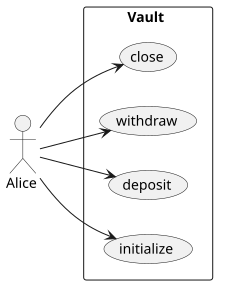
Authority: who authorizes each movement
Signers and programs on one side, the value movements on the other, the edge label naming the mechanism. A user signs the transaction; a program signs as its PDA with invoke_signed:
actor Alice
rectangle "Vault Program\n(signs as vault PDA)" as Prog
usecase "deposit\n(SOL in)" as Dep
usecase "withdraw / close\n(SOL out)" as Wd
Alice --> Dep : signs the tx
Prog --> Wd : invoke_signed
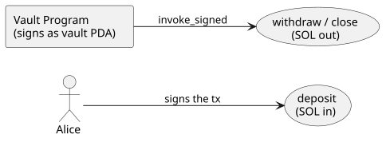
Ownership: which program owns each account
Every node is a rectangle, every edge is owns. The owner is often not the program under test: the System program owns the wallet and the vault, while the program owns only the state it allocated.
rectangle "System Program" as Sys
rectangle "Vault Program" as Prog
rectangle "vault" as Vault
rectangle "vault_state" as State
Sys --> Vault : owns
Prog --> State : owns
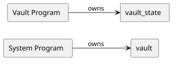
These three are the vault example’s diagrams; Part V builds its test from them, and every worked example opens the same way.
To turn a .puml source into an image, see Rendering PlantUML Diagrams.
Why anchor-litesvm
Testing a Solana program the raw way means standing up a lot of scaffolding before you can assert anything: a mock RPC or a local validator, hand-built Vec<AccountMeta> in exactly the order your program expects, manual signer wrangling, and log parsing by hand when something goes wrong. The friction is real enough that a lot of programs simply go under-tested.
Pinocchio: this book teaches Anchor, but the engine under it isn’t Anchor-specific. A raw Pinocchio program tests through the same harness, observability, and assertions; only the bundle sugar is Anchor-only. See Testing Pinocchio Programs.
anchor-litesvm removes most of that. It sits on top of LiteSVM (an in-process Solana VM: no network, no validator) and adds the Anchor-shaped ergonomics on top:
- Named accounts. You fill in a struct with named fields; Anchor’s
ToAccountMetashandles the ordering. Swapping two fields can’t break your test, because the compiler doesn’t care what order you write them in. (Part II’s Named Accounts chapter is the full treatment.) - One-line setup.
AnchorLiteSVM::build_with_program(id, name, bytes)replaces twenty-odd lines of raw setup. No mock RPC, no network dependencies. - Helpers for the boring parts. Funded accounts, mints, associated token accounts, PDAs: one call each.
- Rich debugging output built in. When a transaction fails (or you just want to see what it did), the result renders four ways: a CPI tree, a Mermaid sequence diagram, and authority and ownership graphs. Part IV covers these.
The real win isn’t fewer lines, it’s a vocabulary: you stop encoding transactions (ordered metas, discriminator bytes, hand-unpacked data) and start describing a cast of actors and what they do to each other. Accounts as Actors is the home of that idea.
What this is not
It is not a replacement for on-chain integration testing against a real cluster. LiteSVM is an in-process VM; it’s fast and deterministic and perfect for unit and scenario testing, but it is not a validator. When you need to test against real network conditions, you still reach for a test validator or devnet. We recommend Surfpool, best in class in that space. This book is about the layer below that, where most of your test-writing time actually goes.
Where to go next
If you just want a passing test, keep reading: Installation & Setup then Your First Test. If you’re migrating an existing raw-LiteSVM suite, the Migration appendix maps the old calls to the new ones.
Installation & Setup
This book assumes you already have an Anchor workspace. If you’re starting from nothing, anchor init my_program scaffolds one (program crate, Anchor.toml, the works); everything below then happens inside that program crate. We’ll use my_program as the program name throughout; substitute your own.
1. Add the dependencies
Two dependencies, and the second one is the interesting one.
[dependencies]
anchor-lang = "1.0.2"
anchor-spl = "1.0.2" # only if your program makes token CPIs
# Host-only: pulled in for `cargo test` builds, never compiled into the
# on-chain (BPF) binary.
[target.'cfg(not(target_os = "solana"))'.dependencies]
anchor-litesvm = { git = "https://github.com/cds-rs/anchor-litesvm", branch = "turbin3" }
Two things deserve explanation.
First, anchor-litesvm is a normal dependency, not a dev-dependency, but scoped with [target.'cfg(not(target_os = "solana"))'.dependencies] so it only compiles for host (test) builds, not the BPF program.
Why not a plain dev-dependency?
Because the derives that make tests pleasant (
Bundle,BundledPubkeys) generate trait impls that, by Rust’s orphan rule, have to live in your program crate, next to your account structs. Adev-dependencyisn’t visible tosrc/; a target-scoped normal dependency is, while still staying out of the deployed binary. The next chapter shows exactly what lands insrc/.
Second, there’s no [dev-dependencies] section at all.
Where are the solana-* crates, then?
The test reaches everything it needs (
Keypair,Pubkey,Signer, the harness, the assertion and token helpers) through theanchor-litesvmfacade re-exports, so you don’t listsolana-*crates separately. Oneuse anchor_litesvm::...and you’re done.
Which litesvm runs your tests?
The one the facade pins:
anchor-litesvmbrings its ownlitesvm(the fork the framework is built against), andctx.svmis that instance. Don’t add a secondlitesvmto your own[dev-dependencies]: a crates.io copy is a different package version from the framework’s, so it neither shares types withctx.svmnor turns features on for it; it just sits in your tree confusing future readers. If you need a litesvm capability the framework doesn’t expose yet, that’s a framework issue to file, not a dependency to add.
Does your program make token CPIs?
If your program makes token CPIs (the Tokens specialization builds one), extend the idl-build feature so the IDL generator can see the SPL types:
[features]
idl-build = ["anchor-lang/idl-build", "anchor-spl/idl-build"]
(anchor-spl tracks anchor-lang’s version: with anchor-lang 1.0.x, use anchor-spl 1.0.x.)
2. Build the program
anchor build
This compiles the program to target/deploy/my_program.so, which your test loads with include_bytes!. Rebuild whenever you change the program: the test embeds the bytes at compile time, so a stale .so means you’re testing yesterday’s program.
That’s the whole setup. Notice what’s not here: no declare_program!, no idls/ directory to populate, no client codegen step. Tests in this harness call your program through its own crate (its generated instruction::* types and your account structs), so the IDL never enters the loop. There’s also no validator to install, no RPC to mock, no keypair files to manage. The next chapter writes a complete test against this.
Your First Test
A complete test you can copy and run. It deploys a program, creates an account, sends one instruction, and checks the result, the shape every test takes: arrange, act, assert.
anchor init scaffolds an initialize that does nothing, too thin to show anything off. So ours does a small real job: create a program-owned account and store a number in it. One instruction, but it exercises named accounts, an argument, a PDA, and on-chain state to assert on. (No tokens yet; those arrive as a specialization once the shape is in hand.)
How we model it
One instruction, initialize, that stores value in a new account. The user_account is the signer and the fee payer. The data account is a PDA the program creates and owns, holding the value; the handler writes the field, and Anchor’s init constraint asks the System program to fund the new account’s rent.
The cast of characters
| Actor | Kind | Role |
|---|---|---|
| user_account | signer | pays the fee and the new account’s rent |
| data | PDA (Account<Data>) | the program-owned account that stores value |
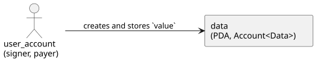
Ownership
The data account is owned by my_program itself: an Account<Data> belongs to the program that declares it. That’s the common case, a program owns the state it creates; the Vault example shows the surprising one, where the System program owns an account your program still controls.
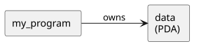
Authority
The user_account signs the transaction; that signature authorizes the instruction and pays for the new account.
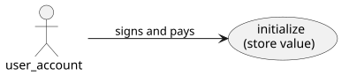
The use cases
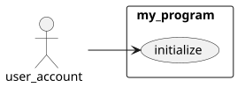
Set up the project
-
Generate the workspace:
anchor init my_program && cd my_program -
Add the dependencies to
programs/my_program/Cargo.toml(Installation & Setup explains each one):[dependencies] anchor-lang = "1.0.2" # Host-only: the test harness, never compiled into the on-chain binary. [target.'cfg(not(target_os = "solana"))'.dependencies] anchor-litesvm = { git = "https://github.com/cds-rs/anchor-litesvm", branch = "turbin3" }
Now write the program.
The program
The account it stores:
// src/state.rs
#[account]
#[derive(InitSpace)]
pub struct Data {
pub value: u64,
}The accounts:
// src/instructions/initialize.rs
#[cfg_attr(
not(target_os = "solana"),
derive(anchor_litesvm::BundledPubkeys),
bundled_with(crate::test_helpers::InitAccs)
)]
#[derive(Accounts)]
pub struct Initialize<'info> {
/// Signs the transaction and pays the new account's rent.
#[account(mut)]
pub user_account: Signer<'info>,
#[account(
init,
payer = user_account,
space = 8 + Data::INIT_SPACE,
seeds = [b"data", user_account.key().as_ref()],
bump,
)]
pub data: Account<'info, Data>,
pub system_program: Program<'info, System>,
}user_account signs and pays; data is the PDA the program creates and writes into. The #[cfg_attr(...)] line is the test hook: on host builds it derives BundledPubkeys, which lets a test drive this instruction from a bundle of pubkeys; on the BPF build it vanishes.
The handler stores value in the data account:
// src/instructions/initialize.rs
impl Initialize<'_> {
pub fn initialize(&mut self, value: u64) -> Result<()> {
self.data.value = value;
Ok(())
}
}The #[account(init, ...)] constraint does the heavy lifting: it creates the PDA, funds its rent from user_account, and sizes it (8 + Data::INIT_SPACE, the account discriminator plus the struct). The handler just writes the field.
The bundle that drives it lives in a host-only module:
// src/test_helpers.rs
#[derive(Copy, Clone, Debug, Bundle)]
pub struct InitAccs {
pub user_account: Pubkey,
pub data: Pubkey,
}system_program isn’t a field. The derive reads its Program<System> type and fills the System program id, so tests never spell it. #[derive(Bundle)] also gives InitAccs a Default, so a test sets only the fields it varies and lets ..InitAccs::default() cover the rest.
Wire the module in and call the handler:
// src/lib.rs
#[cfg(not(target_os = "solana"))]
pub mod test_helpers;// src/lib.rs
#[program]
pub mod my_program {
use super::*;
pub fn initialize(ctx: Context<Initialize>, value: u64) -> Result<()> {
ctx.accounts.initialize(value)
}
}The test
// tests/test_initialize.rs
use anchor_litesvm::{AnchorLiteSVM, Signer, TestHelpers};
use my_program::{instruction as vix, state::Data, test_helpers::InitAccs};
#[test]
fn test_my_first_instruction() {
// 1. Setup: one-line deployment.
let mut ctx = AnchorLiteSVM::build_with_program(
my_program::ID,
"my_program",
include_bytes!("../../../target/deploy/my_program.so"),
);
// 2. A funded signer, and the PDA the program creates off its key.
// Name them, so every rendered view below reads in your words, not base58.
let user = ctx.svm.create_funded_account(10_000_000_000).unwrap();
let data = ctx.svm.get_pda(&[b"data", user.pubkey().as_ref()], &my_program::ID);
ctx.alias(user.pubkey(), "user").alias(data, "data");
// 3 + 4. Build and send in one chain. The bundle names the accounts;
// `system_program` is auto-filled, so it isn't here.
let accs = InitAccs { user_account: user.pubkey(), data };
let result = ctx
.tx(&[&user])
.build(accs, vix::Initialize { value: 42 })
.send_ok();
// 5. Verify the stored value.
assert_eq!(ctx.load::<Data>(&data).value, 42);
// 6. A passing test is the floor. The framework recorded the whole
// transaction; render what it gave back.
result
.print_logs_structured()
.print_mermaid()
.print_authority_graph()
.print_ownership_graph(&ctx.svm);
}Five things to know:
- The test imports from the program crate:
my_program::{instruction as vix, state::Data, test_helpers::InitAccs}. Nodeclare_program!, no generated client. ctx.alias(pubkey, name)registers a name for an account; every rendered view substitutes it for the base58, which is what the last section shows.ctx.tx(&[&user])lists the signers,.build(accs, args)makes the instruction,.send_ok()sends it, asserts success, and returns theTransactionResultyou render from.get_pda(&[b"data", user.pubkey().as_ref()], &my_program::ID)derives the PDA the same way the program does, so the test and the program agree on the address;ctx.load::<Data>(&data)reads it back to assert.- The
include_bytes!path is relative to the test file; the workspacetarget/is three directories up.
Put it together and run it
Six snippets, five files. Starting from anchor init my_program, here is where each one goes:
my_program/
├── Cargo.toml # dependencies (see Installation & Setup)
└── programs/my_program/
├── src/
│ ├── lib.rs # `pub mod test_helpers;` + the #[program] handler
│ ├── state.rs # the Data account
│ ├── instructions/initialize.rs # the Initialize accounts struct + handler
│ └── test_helpers.rs # the InitAccs bundle
└── tests/
└── test_initialize.rs # the test
Then build the program and run the test:
anchor build # compiles programs/my_program to target/deploy/my_program.so
cargo test # builds the test against that .so and runs it
test test_my_first_instruction ... ok
test result: ok. 1 passed; 0 failed; 0 ignored; 0 measured; 0 filtered out
(Rebuild with anchor build whenever you change the program; the test embeds the .so at compile time.)
What the framework gives back
test result: ok is the floor: the transaction ran and the value stuck. But the framework recorded the whole transaction, and the four print_* calls render it. This is a taste of Part IV; here is what one initialize produced. (Your compute numbers and the raw addresses differ run to run; the names you aliased do not.)
Structured logs, the call tree with compute and fees:
── my_program::Initialize ──────────────────────────────────
Transaction signers=[user]
└── my_program::Initialize [1] ✓ …cu signer=user
└── System::CreateAccount [2] ✓ (no cu)
Fee: 5000 lamports
Your instruction made one inner call, System::CreateAccount, to allocate the data account. You wrote no CPI; the init constraint did.
A sequence diagram (print_mermaid), the same calls as something that renders in a PR or this book:
sequenceDiagram
autonumber
participant user
participant my_program
participant System
user ->> my_program: Initialize
my_program ->> System: CreateAccount
An authority graph (print_authority_graph), who signed for what:
flowchart LR
classDef signer fill:#d4edda,stroke:#28a745;
classDef program fill:#cce5ff,stroke:#007bff;
my_program[my_program]:::program
user([user]):::signer
data([data]):::signer
System[System]:::program
user -->|signs| my_program
user -->|signs| System
data -->|signs| System
my_program -->|writes| data
(data shows as a signer because creating a PDA is a program-signed CPI: the program signs for the PDA with its seeds. The Authority & Ownership chapter unpacks that.)
An ownership graph (print_ownership_graph), who owns each account once the dust settles:
flowchart LR
classDef owner fill:#cce5ff,stroke:#007bff;
classDef account fill:#fff3cd,stroke:#ffc107;
System[System]:::owner
user[(user)]:::account
my_program[my_program]:::owner
data[(data)]:::account
System -->|owns| user
my_program -->|owns| data
This makes the Ownership point concrete: my_program owns data, the System program owns user. Every view reads in the names you aliased, never base58: name your cast, and everything the framework hands back is legible. That payoff, four ways, is Part IV. The next chapter walks the arrange, act, assert shape in full first.
The Shape of a Test
Every test in this book has the same three movements, the ones the worked examples all show: arrange a scenario, act on it, assert the result. The framework fuses the busywork inside each movement, so what you actually write is short.
Arrange: set up the scenario
A setup() builds the world once. It deploys the program with AnchorLiteSVM::build_with_program(program_id, "name", bytes), mints the cast as deterministic actors with their token accounts and PDAs (the ctx.svm.create_* helpers), names them in the alias table, and hands back a scenario: the context, the bundle of pubkeys, and the signer keypairs. Vault and Escrow show this end to end.
Deploying and creating accounts are one movement, not two: setup() returns something you can act on immediately.
Act: build and send
ctx.tx(&[&user])
.build(accs, vix::Initialize { amount: 1_000_000 })
.send_ok();One chain. ctx.tx(signers) names who signs, .build(bundle, args) turns your bundle and the generated args into an instruction, and .send_ok() sends it and asserts it succeeded. Building and executing aren’t separate steps you thread together; they’re one statement. (accs is your bundle; vix is your program’s instruction module, use my_program::instruction as vix. To send several instructions atomically, or to inspect one before sending, ctx.program().build_ix(accs, args) hands back the raw Instruction.) See Executing Transactions.
Assert: check the state
ctx.svm.assert_token_balance(&token_account, 1_000_000);send_ok() already asserted the transaction ran; the ctx.svm.assert_* helpers (assert_account_exists, assert_token_balance, assert_sol_balance, assert_account_owner, and friends), plus ctx.try_load for an account’s fields, assert the state ended up where you expected. A good test pairs the two: send, then check what the send left behind. See Assertion Helpers.
That’s the whole shape. The worked examples thread a Report recorder through it to narrate each movement into committable Markdown, but the bones are always arrange, act, assert. That split, a plain mechanics test versus a narrated scenario, is drawn in full in The Mechanism, End to End.
A few things to get right
Finish the chain with a terminator. ctx.tx(&[&user]).build(accs, vix::Initialize { amount }) builds a description of a transaction; the terminator (.send_ok(), .send_err(), .send_err_named(...)) is what sends it. The send is the verb.
Match the args type to the bundle. Each bundle is tied at the type level to one instruction’s accounts, so .build(deposit_accs, vix::Withdraw { .. }) is a compile error at the call site rather than a malformed instruction at runtime. Reach for the args type that goes with your bundle.
Decorate the accounts struct with the cfg_attr. The bundle machinery comes from #[cfg_attr(not(target_os = "solana"), derive(BundledPubkeys), bundled_with(...))] on your #[derive(Accounts)] struct; that’s what gives build the From<Bundle> projection it needs. See Bundled Pubkeys.
Let the bundle handle account order. The bundle’s fields are named, and Anchor’s own ToAccountMetas produces the list in the program-defined order, so ordering is a non-issue here; the Named Accounts chapter explains why.
How It Fits Together
You’ve written one test. Before the rest of the book takes each piece apart, here’s the whole vocabulary on one page, and how the pieces connect. Every term links to the chapter that covers it in depth.
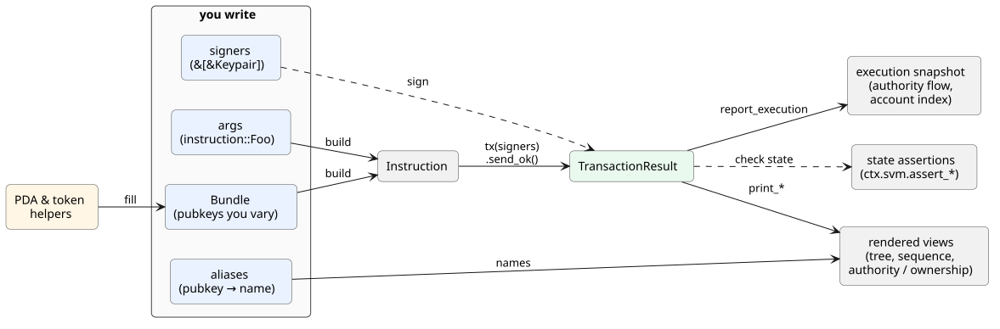
What you write
Five things, and the framework asks for nothing else:
- Bundle: a struct of the pubkeys your test varies, one named field per account. The spine of the whole library; Part II is four views of it.
- args: your program’s generated
instruction::Foostruct, paired to the bundle at the type level so a mismatch is a compile error. The builder. - signers: the
Keypairs that authorize the transaction. The bundle holds pubkeys; signing is separate. Executing. - aliases:
ctx.alias(pubkey, "maker"), the names the rendered output reads back to you. Accounts as actors. - helpers:
ctx.svm.create_token_mint,get_pda, and friends produce the pubkeys that fill the bundle. PDAs & tokens.
What the framework gives back
Hand it those five, and it produces the rest:
- build: bundle + args become an
Instruction, accounts ordered by the program itself, not by you. Named accounts, the derive. - tx / send:
ctx.tx(signers).build(..).send_ok()builds, sends, and asserts the outcome in one chain. Executing. - TransactionResult: what a send returns; the logs, the compute, the outcome, and the handle every view hangs off. Executing.
- rendered views: the CPI tree, sequence diagram, and authority/ownership graphs of a single transaction, in your alias names. Part IV.
- execution snapshot:
ctx.report_execution(md), the authority flow and account index across the whole test, committable and diffable. Authority & ownership. - state assertions:
ctx.svm.assert_*, the other half of every test; did the world end up where you expected. Assertions.
The domain you get to stay in
The two lists above are mechanics: tokens in, artifacts out. What they buy you is the freedom to reason about your program in its own language instead of the machine’s.
Every system worth testing has a domain-specific language (DSL): the few concepts that are the natural vocabulary of its problem. Reason outside them and you quietly start solving the wrong problem. Solana’s are accounts, ownership, authorities, and transactions; that’s what the runtime thinks in, and what its security properties are stated in. Describe a test in bare pubkeys and an ordered Vec<AccountMeta> and it still runs, but you’ve left that vocabulary: a reader has to translate base58 and slot positions back into “who owns this, who signed, what moved” before they can judge whether the test is even right.
Naming the cast puts the test back in the runtime’s language. The same test, twice:
// Plumbing: correct, but you reason in positions and base58.
let accounts = vec![
AccountMeta::new(payer.pubkey(), true), // who? authorizing what?
AccountMeta::new(vault_pda, false), // position 1 means what?
AccountMeta::new_readonly(system_program::ID, false),
];
// Domain: a named cast and a named verb. The accounts, the ordering, and
// the program ids stay in the code; the test reads as a sentence.
let alice = ctx.cast_actor("Alice");
open_and_fund_vault(&mut ctx, &alice, 1_000_000); // a verb your suite ownsTwo things follow. The questions the test provokes become domain questions, the ones worth a team’s time: which vault? why does Alice both open and fund it, rather than Alice opening and Bob funding? Those are design decisions, visible because the test speaks the domain. And because the domain vocabulary is where a system’s invariants live, a test phrased in it asks the right questions by default, what states are valid, what transitions are allowed, what must hold, instead of what bytes sit where.
A heuristic worth keeping: bugs hide where the implementation and the domain language disagree. A test written in the domain sits right on that seam, so a divergence (an authority that shouldn’t sign, an account owned by the wrong program) reads as a sentence that’s wrong, not a byte you’d decode and hope to notice. The named views from the last section are what make it legible. The DSL is the shortest path between your code and the truth the runtime is actually enforcing.
So the arc, in full: helpers fill a bundle, the bundle and args build an instruction, you send it with signers and get a TransactionResult, your aliases turn that into views you can read, and because every piece is named, the whole thing reads as a sentence about your problem rather than your plumbing. The rest of the book is each of those words, and that sentence, in full.
Deterministic Identities
Keypair::new() hands you a fresh address every run. Fine, until you want to
commit a test’s output: a structured-log dump or a Report re-rolls every address
(and the compute units derived from them) on each run, so it never diffs clean.
Seed the cast instead. Declare your actors first, by name:
let maker = ctx.cast_actor("maker");
let taker = ctx.cast_actor("taker");ctx.cast_actor(name) derives a keypair from
(program_id, name), funds it, and aliases it under name, in one line. The name is
the seed, so the same name yields the same address every run; the context rejects a
duplicate. For an exact starting balance, cast_actor_with_sol(name, lamports).
Outside a context (a raw litesvm or Pinocchio harness), the same derivation is
deterministic_keypair(domain, role); ActorRegistry::new(domain) adds a
duplicate-role guard when actors are created in more than one place.
Actors first; everything else is a leaf
This is the actors-first idiom: the actors are the roots, and every mint, PDA,
and ATA derives from them. A random mint would churn the whole tree downstream, so
seed the mints too, with cast_mint:
let mint_a = ctx.cast_mint("A", &maker, 9);cast_mint derives the mint from its name, creates it under maker’s authority, and
aliases it.
Pin the roots and the entire address tree is fixed: the escrow PDA derived from
maker + seed, the vault ATA from escrow + mint_a, and so on down. Declare the
cast at the top of the test; let the leaves fall out of it.
The payoff: output becomes a snapshot
With identities seeded, a test’s output is byte-stable across runs. That promotes it
from throwaway logging to a committable artifact: write the structured tree or the
Report to a file, commit it, and a later diff means the behavior changed, not
that the keypairs rolled.
Part IV’s views, the CPI tree, the mermaid diagrams, and the authority and ownership graphs, become regression snapshots once the addresses under them stop moving. The project’s real example programs lean on exactly this: each commits a generated test report that diffs clean run to run.
In CI: the snapshot is a regression gate
A byte-stable report is a golden file, so CI can regenerate it and fail on any drift:
- run: just testrun # regenerate the committed report
- run: git diff --exit-code TESTRUN.md
A clean diff passes. A non-empty diff fails the job and shows exactly what moved: a compute-unit delta, a reordered CPI, an added account. The reviewer decides whether it was intended (commit the new snapshot) or a regression (fix the code). One gate asserts the whole transaction shape at once, with no per-field assertions to maintain.
See Test-Output Conventions for the full commit-one-canonical-file workflow.
Named Accounts (No More Ordering)
The common thread: the bundle
One idea runs through all of Part II: the bundle. To see why it’s worth a name, start with what an instruction is on Solana.
A program can’t reach for an account on its own. The runtime hands it exactly the accounts the instruction names, in a fixed list, and nothing else (this is Solana’s account model: no ambient access, every account passed explicitly). So an instruction comes paired with an account set: the accounts it needs present to execute on-chain. That set isn’t optional metadata; it’s part of the instruction’s identity. make stripped of its escrow, vault, and mints isn’t a smaller make; it’s a transaction the runtime won’t run.
The bundle is an ergonomic name for that account set: a plain struct holding the pubkeys your test varies, one named field per account. Raw LiteSVM makes you spell the set as an ordered Vec<AccountMeta> (the next section); the bundle lets you name it instead. Same set the runtime requires, named rather than counted.
This chapter is about the first pain the bundle removes, and the one you’ll feel first in raw LiteSVM: account ordering.
The problem: ordered vectors
A Solana instruction carries its accounts as an ordered list. Raw, you build that list yourself, as a Vec<AccountMeta>, in exactly the order the program expects:
// Raw LiteSVM: you MUST get the order exactly right
let instruction = Instruction {
program_id,
accounts: vec![
AccountMeta::new(maker.pubkey(), true), // position 0
AccountMeta::new(escrow_pda, false), // position 1
AccountMeta::new_readonly(mint_a, false), // position 2
AccountMeta::new_readonly(mint_b, false), // position 3
AccountMeta::new(maker_ata_a, false), // position 4
AccountMeta::new(vault, false), // position 5
// ... more, all position-sensitive
],
data: instruction_data,
};The order matters, and it’s invisible. Swap positions 4 and 5 and, if you’re lucky, the transaction fails with “invalid account”; if you’re unlucky, it succeeds against the wrong accounts and corrupts state. The failure modes all trace to the same root:
- Swap two accounts: transaction fails, or worse, silently does the wrong thing.
- Miss an account: every subsequent position is off by one.
- The program adds an account: you hunt for the right insertion point or everything shifts.
- The program reorders its accounts: every test needs a manual, error-prone update.
This is the number-one bug source in raw Solana testing, and it’s pure ceremony: the position carries no meaning a human cares about.
The fix: a named bundle
With anchor-litesvm you fill in a named struct, a bundle, instead, and order doesn’t matter:
let accs = MakeBundle {
// any order you like; the names are what bind
vault,
maker: maker.pubkey(),
escrow: escrow_pda,
mint_b: mint_b.pubkey(),
mint_a: mint_a.pubkey(),
maker_ata_a,
};
let ix = ctx.program().build_ix(accs, vix::Make { seed: 42, amount: 1_000_000, receive: 500_000 });Rearrange those fields however reads best; it compiles to the same instruction, because the program defines the canonical order through its own ToAccountMetas, not your memory. And notice the bundle is shorter than the raw Vec: there’s no token_program, no system_program, no associated_token_program. Those have exactly one canonical pubkey each, so the bundle doesn’t carry them; they’re filled in for you (the next chapters show how). The bundle holds only the pubkeys your test actually varies.
What you get from the switch:
- Type safety: the compiler insists every required account is present.
- Named fields: each account’s purpose is on the page, not implied by its index.
- Order independence: rearrange freely.
- Refactor safety: if the program changes its account set, your test stops compiling (a loud, immediate failure) instead of failing mysteriously at runtime.
- IDE support: autocomplete lists the required fields.
- Fewer bugs: no hand-built
Vec, no positions to miscount.
Pinocchio: the bundle works because Anchor’s
#[derive(Accounts)]generates theToAccountMetasthat knows the order. A Pinocchio program generates nothing of the kind, so you order the account metas by hand; the naming win here is Anchor’s, the engine underneath is shared. See Testing Pinocchio Programs.
Where this goes next
You’ve met one face of the bundle: filling it in by name. Three chapters cover the rest, each a different face of the same struct: you build an instruction from it (the builder, which also shows where the struct comes from), you populate its fields with PDA and token helpers (PDAs & tokens), and one derive wires it to your program and to the rendered output, covering auto-injection, the optionality fixups, and the rest of the family. The foundation under all four is this: you name accounts, the program orders them, and a whole category of bug disappears.
The Instruction Builder
The previous chapter showed what you fill in (a named bundle); this one is the call that turns it into an Instruction.
The one-liner
let ix = ctx.program().build_ix(accs, vix::Transfer { amount: 500_000 });ctx.program()hands you aProgrambound to your deployed program’s id. (Standalone,Program::new(program_id)does the same.)build_ix(bundle, args)takes your bundle of pubkeys and the generated args struct, projects the bundle into the full account list (auto-injecting the canonical program IDs), serializes the args, and returns a readyInstruction.
Note it returns an Instruction, not a Result<Instruction, _>. Building can’t fail here: an InstructionData value always serializes, and the account projection is total, so there’s no error case to unwrap. (vix is the conventional short alias for your program’s instruction module: use my_program::instruction as vix.)
Pinocchio:
build_ixprojects an Anchor bundle into Anchor’s generated account and arg types. A Pinocchio program has neither, so you build theInstructiondirectly (program id, account metas, data) and send that. See Testing Pinocchio Programs.
Where the bundle comes from
accs is a bundle struct you define once in a host-only test_helpers module: a flat #[derive(anchor_litesvm::Bundle)] of pubkeys, bound to the instruction’s accounts by a cfg_attr carrying bundled_with(...). That cfg_attr generates the projection from the bundle into the account list and the type-level link to the args, which is what build_ix runs. The next chapter is the full tour of both pieces; here, all build_ix needs is the finished bundle.
Why build_ix and not a send
build_ix stops at an Instruction; it doesn’t send. That’s deliberate: testing doesn’t need the RPC abstractions a real client wraps around instruction-building, and keeping build and send separate means you can assemble several instructions and decide how to send them.
When you do just want to send one and assert it worked, the Tx builder folds build and send together:
ctx.tx(&[&alice])
.build(accs, vix::Transfer { amount: 500_000 })
.send_ok();.build(bundle, args) here is build_ix under the hood; .send_ok() sends the transaction with the listed signers and asserts success. Most tests use this form and never name the intermediate Instruction at all.
Several instructions, one transaction
When you need atomicity, build each instruction and send them together:
let ix1 = ctx.program().build_ix(accs1, vix::Deposit { amount: 1_000 });
let ix2 = ctx.program().build_ix(accs2, vix::Withdraw { amount: 400 });
ctx.execute_instructions(vec![ix1, ix2], &[&alice]).assert_success();(Atomic meaning the usual Solana guarantee: either the whole transaction lands or none of it does.)
The escape hatch, and what’s underneath
build_ix is a convenience over a lower-level builder that takes the account metas and args directly:
let ix = ctx.program()
.accounts(some_to_account_metas) // anything implementing ToAccountMetas
.args(some_instruction_data) // anything implementing InstructionData
.instruction()?; // Result<Instruction, _>This is a provided escape hatch, not the common path: with a bundle, the ToAccountMetas value comes from the projection, so you reach for the hand-written builder only when your account list comes from some other source. build_ix composes this builder once the bundle has been projected.
To adjust what the projection produced before the instruction is assembled, build_ix_with(bundle, args, |accs| { ... }) runs your closure over the projected accounts struct, then assembles the instruction from the result. The framework is still developing and we don’t yet know how this UX will land, so rather than claim you’ll rarely need it, treat it as an escape hatch for more sophisticated usage: if you reach for it, please open an issue so we can track the case and see whether the projection should grow to cover it.
PDAs & Token Helpers
Most instructions need two kinds of address you don’t have lying around: program-derived addresses (PDAs) and token accounts. anchor-litesvm has helpers for both, on ctx.svm, so you spend your setup naming actors rather than wrangling SPL boilerplate.
PDAs
A PDA is derived from seeds plus a program id. For your own program’s PDAs, ctx.pda supplies the id, so you pass only the seeds:
// Just the address (the common case):
let escrow = ctx.pda(&[b"escrow", maker.pubkey().as_ref(), &seed.to_le_bytes()]);
// Address and bump, when the instruction wants the bump too:
let (vault, bump) = ctx.pda_with_bump(&[b"vault", escrow.as_ref()]);ctx.pda derives against this context’s program id, so you can’t hand it the wrong one. When you need another program’s PDA (a Metaplex metadata account, say), reach for the generic ctx.svm.get_pda(seeds, &program_id), which takes the id explicitly. (Pubkey::find_program_address(&[...], &program_id) is the same thing one layer down, if you’d rather not go through ctx.svm.)
Once you have the address, it’s just another field in your bundle: EscrowBundle { escrow, vault, .. }. The bundle doesn’t care whether a pubkey came from a keypair, an ATA derivation, or a PDA; it’s all pubkeys by the time you build.
Token helpers
The SPL setup dance, create a mint, create accounts to hold it, mint some supply, is four calls:
// A mint with 6 decimals, controlled by `authority`:
let mint = ctx.svm.create_token_mint(&authority, 6).unwrap();
// An associated token account (ATA) for an owner. Returns the ATA address:
let ata = ctx.svm.create_associated_token_account(&mint.pubkey(), &owner).unwrap();
// Mint supply into an account (authority must be the mint's authority):
ctx.svm.mint_to(&mint.pubkey(), &ata, &authority, 1_000_000).unwrap();
// Read a balance back (None if the account doesn't exist, e.g. after a close):
let balance = ctx.svm.token_balance(&ata).unwrap_or(0);Two notes:
create_token_mintreturns the mint keypair, so you reach formint.pubkey()when you need the address.create_associated_token_accountreturns the ATA pubkey directly (an ATA is a derived address, not a fresh keypair).create_token_accountis the non-associated cousin (a token account at a fresh keypair rather than the derived ATA), for the rarer cases that need one.- These helpers return a
Result, so each call ends in.unwrap()or?. This book uses.unwrap()because its tests return(); give a test a-> Result<(), Box<dyn std::error::Error>>signature instead and?works just as well. It’s a per-suite style choice, not a framework requirement; you’ll see both spellings in the wild (the migration appendix leans on?), and the helpers don’t care which you pick.
Need deterministic addresses for committed output?
The Deterministic Identities concept covers this in full; in short: by default, generated keypairs (and the mints and PDAs derived from them) are random each run. That’s fine for most tests, but it means any committed test output (a structured-log snapshot, a report) churns its addresses on every run and won’t diff cleanly.
When you want stable addresses, create_token_mint_at takes a caller-supplied mint keypair, and deterministic_keypair("myapp/v1", "mint:x") produces a stable keypair from a namespace and label:
use anchor_litesvm::deterministic_keypair;
let mint_kp = deterministic_keypair("escrow/v1", "mint:a");
ctx.svm.create_token_mint_at(&authority, &mint_kp, 6).unwrap();
// mint_kp.pubkey() is the same on every run, so derived ATAs/PDAs are tooIn a test context, ctx.cast_mint("A", &authority, 6) rolls that pair into one call: it derives the mint from its name, creates it, and aliases it.
You don’t need this to write tests; reach for it only when you’re committing rendered output and want it to diff cleanly. (It also stabilizes the compute-unit drift discussed in Reading Compute & Fees, since stable pubkeys mean a stable PDA bump search.)
Putting it together
A token-transfer test wires all of this: set up the mints and accounts, name them in a bundle, send, and assert.
let mint = ctx.svm.create_token_mint(&authority, 9).unwrap();
let from = ctx.svm.create_associated_token_account(&mint.pubkey(), &alice).unwrap();
let to = ctx.svm.create_associated_token_account(&mint.pubkey(), &bob).unwrap();
ctx.svm.mint_to(&mint.pubkey(), &from, &authority, 1_000_000).unwrap();
// `token_program` isn't in the bundle: it's auto-injected from the
// accounts struct's `Interface<TokenInterface>` field.
let accs = TransferBundle { from, to, authority: alice.pubkey() };
ctx.tx(&[&alice])
.build(accs, vix::Transfer { amount: 500_000 })
.send_ok();
ctx.svm.assert_token_balance(&from, 500_000);
ctx.svm.assert_token_balance(&to, 500_000);Bundled Pubkeys (the derive)
You’ve been using this derive since your first test: the #[cfg_attr(not(target_os = "solana"), derive(BundledPubkeys), bundled_with(...))] line on the accounts struct, and the #[derive(Bundle)] struct it points at. This chapter is the full account of what that machinery does, the abstract picture first, then the corners (auto-injection, the naming precondition, optionality fixups, the rest of the family).
This is the teaching tour. The why (the exact impls the macro emits, how span propagation gives good errors, the avenues abandoned) lives in
docs/design/bundled-pubkeys.md. Same subject, deeper altitude.
Pinocchio: the whole bundle-derive idea is Anchor-shaped. It bridges your test bundle to the
accounts::Make/instruction::Maketypes Anchor generates; Pinocchio generates no such namespaces, so there is nothing to project into and noBundledPubkeys. Pinocchio’s derive,#[derive(Discriminator)]on the instruction enum, does a different job: it generates the dispatch discriminators and the host-side instruction names the renderers read. A Pinocchio test builds the rawInstructiondirectly rather than projecting a bundle. See Testing Pinocchio Programs.
What the derive actually does
Your #[derive(Accounts)] struct is the instruction’s on-chain context: the account set it needs (Named Accounts covers why that set is the instruction’s identity). What the bundle derive leans on is what Anchor files alongside it. From the #[program] handler, Anchor generates two parallel namespaces, both filed under the instruction’s name (here, Make):
accounts::Make— the account list a client passes as metas.instruction::Make— the handler’s args a client passes as data.
BundledPubkeys reuses that name. You write one derive, on one struct, and from that single site it emits two bridges, one to each namespace:
#[derive(BundledPubkeys)] on `Make`
│
reuses the name "Make"
│
┌───────────────────────┴────────────────────────┐
▼ ▼
accounts::Make instruction::Make
(the account list) (the handler args)
│ │
▼ ▼
impl From<Bundle> for accounts::Make impl BuildableIx<Bundle> for instruction::Make
The crux is that middle line: the derive doesn’t read your struct’s fields to know what to wire up, it reuses your struct’s name. It looks Make up in both namespaces and bridges your bundle to each, a From<Bundle> so the bundle becomes the account metas, and a BuildableIx<Bundle> so build_ix knows which args pair with which bundle. Name-based resolution across two generated namespaces, which is also why the one precondition below is about names.
Two properties of the projection
The bundle names only the pubkeys your test varies; the derive fills in the rest:
let accs = EscrowBundle { maker: maker.pubkey(), mint_a, vault, escrow };
let ix = ctx.program().build_ix(accs, vix::Make { amount: 1_000 });Two properties follow from this.
Program IDs are auto-injected. Fields typed Program<'_, System>, Program<'_, AssociatedToken>, or Interface<'_, TokenInterface> each have exactly one canonical pubkey, so the bundle doesn’t carry them and your test doesn’t spell them; the derive reads the field’s Anchor type and fills the id. The bundle holds only the pubkeys you actually vary. (Program<'_, Token> is not in that set; if you’re on the classic token program, declare it as Interface<TokenInterface>, which the derive recognizes and which still resolves to the SPL Token id.)
Mismatches are compile errors. Because the derive emits BuildableIx<Bundle> for exactly one args type (the instruction::Make it found by name), build_ix won’t accept the wrong pairing. Passing Withdraw args with a Deposit bundle simply doesn’t typecheck; the error lands at the call site at compile time, not as a malformed instruction at runtime.
The bundle holds pubkeys, not signers
Every field in a bundle is a Pubkey. The bundle is the account-list view of an instruction, and projecting it into the metas is all BundledPubkeys does. Signing is a separate concern: ctx.tx(&[&signer]) takes Keypairs, and a pubkey can’t sign. So a scenario keeps the signer keypairs alongside the bundle, one carrying the secret key and one carrying the account meta:
pub struct Scenario {
pub accs: TransferBundle, // accs.authority : Pubkey (build the ix)
pub alice: Keypair, // alice : Keypair (sign the tx)
}Both come from the same identity, so alice.pubkey() == accs.authority by construction. Build with the bundle, sign with the keypair.
The one precondition that bites
Since the derive resolves its two targets by name (the directory lookup above), the precondition follows directly: your accounts struct’s name must equal PascalCase of the handler function name. Anchor files the args type under PascalCase(handler_fn_name), so that’s the entry the derive will look for in the instruction directory.
The common case satisfies this by construction (you name the Accounts struct after the instruction). It breaks when a short struct pairs with a longer handler: fn initialize_poll generates instruction::InitializePoll, but if your struct is InitPoll, the derive looks up instruction::InitPoll, which doesn’t exist. You’ll get an E0425: cannot find type ... in module crate::instruction, pointed at the struct definition.
The fix is to name the entry explicitly, overriding the inferred lookup:
#[cfg_attr(
not(target_os = "solana"),
derive(anchor_litesvm::BundledPubkeys),
bundled_with(
InitPollBundle,
instruction = crate::instruction::InitializePoll, // override the inferred path
)
)]
#[derive(Accounts)]
pub struct InitPoll<'info> { /* ... */ }(accounts = ... is accepted for symmetry, but rarely needed; Anchor pulls that name from Context<Foo>, so it usually matches.)
Optionality fixups
One bundle is often shared across several account structs that disagree on whether a field is optional. Two per-field attributes bridge the gap during projection:
#[bundle(unwrap)]: anOption<T>bundle field projects into a bareTaccount field, panicking with a pointed message if the bundle left itNone.#[bundle(wrap_some)]: a bareTbundle field projects into anOption<T>account field.
Without an annotation, a type mismatch is a plain compile error, which is the right default: coercing optionality is exactly the kind of thing you want to opt into explicitly.
The gotcha that produces confusing errors
Keep bundled_with(...) inside the same cfg_attr as the derive. Pulled out into a bare #[bundled_with(...)], it either fires without the derive present or reads as an unknown attribute under the on-chain target, and the symptom is an ugly lifetime-and-privacy error cascade that looks nothing like the real cause. The canonical form is the combined cfg_attr shown throughout: derive and its configuration gated together, off for BPF.
The rest of the family
BundledPubkeys is the core; three smaller derives round it out (each its own concern, here for orientation):
Bundle: aDefaultimpl that fills everyPubkeyfield withPubkey::new_unique(), so a bundle is ready to populate from setup, binding only the keys you care about with..Bundle::default()and letting the rest fall to throwaway placeholders.BundleFrom: projects a bundle from several source structs, for tests that assemble pubkeys from multiple actor objects (SwapBundle::from((&pool, &user))).AliasMirror: wires a struct’s fields into theAliasestable in one shot, so the bundle you build is the cast your rendered output reads in.
AliasMirror closes the loop: the struct that names your accounts for building also names them for the rendering views, so the cast list and the instruction inputs stay one source of truth.
The Mechanism, End to End
The four chapters before this one each took the bundle from one side. This one is all of them at once, on the smallest program that exercises the whole mechanism: a counter. One PDA, two instructions (initialize and increment), no tokens. Every block below is included from book/listings/counter, a crate CI builds and tests; clone it and cargo test to run it yourself.
It’s a counter on purpose. Tokens, mints, ATAs, mainnet forks are specializations you layer on once the shape is in your hands; the spine stays bare so nothing competes with the macro and the bundle for your attention.
Pinocchio: the counter is an Anchor program, and so is everything this chapter wires up. The same harness, observability, and assertions drive a Pinocchio program; what differs is the bundle and derive sugar. Testing Pinocchio Programs is the counterpart.
The source layout
A bundle-driven test spreads across four files, and exactly one of them carries the macro. Hold the map before the code:
programs/counter/src/
state.rs the account the program stores
instructions/initialize.rs #[derive(Accounts)] + the cfg_attr <- the macro lives here
lib.rs #[program], the handlers
test_helpers.rs #[derive(Bundle)], the pubkey bundle <- host-only
tests/
test_counter.rs build, send, assert
Where the instruction is defined, and how the bundle ties in
The account the program stores is plain Anchor:
// src/state.rs
#[account]
#[derive(InitSpace)]
pub struct Counter {
pub count: u64,
}The instruction’s context is an #[derive(Accounts)] struct. The cfg_attr stacked above it is the tie-in, and the one line in this chapter you most need to place correctly: it puts BundledPubkeys on the struct, and bundled_with(...) names the bundle to bridge to.
// src/instructions/initialize.rs
#[cfg_attr(
not(target_os = "solana"),
derive(anchor_litesvm::BundledPubkeys),
bundled_with(crate::test_helpers::InitializeBundle)
)]
#[derive(Accounts)]
pub struct Initialize<'info> {
#[account(mut)]
pub payer: Signer<'info>,
#[account(
init,
payer = payer,
space = 8 + Counter::INIT_SPACE,
seeds = [b"counter", payer.key().as_ref()],
bump,
)]
pub counter: Account<'info, Counter>,
pub system_program: Program<'info, System>,
}system_program is a field here (Anchor needs it to create the PDA), but watch for it to be absent from the bundle two sections down: it auto-injects. The handler is ordinary Anchor, and the #[program] module wires it to its context:
// src/instructions/initialize.rs
impl Initialize<'_> {
pub fn initialize(&mut self, start: u64) -> Result<()> {
self.counter.count = start;
Ok(())
}
}// src/lib.rs
#[program]
pub mod counter {
use super::*;
pub fn initialize(ctx: Context<Initialize>, start: u64) -> Result<()> {
ctx.accounts.initialize(start)
}
pub fn increment(ctx: Context<Increment>) -> Result<()> {
ctx.accounts.increment()
}
pub fn donate(ctx: Context<Donate>, amount: u64) -> Result<()> {
ctx.accounts.donate(amount)
}
}Where the helper file goes
The bundle is a flat struct of pubkeys, one named field per account you vary. It lives in a host-only test_helpers module, alongside the program rather than inside it:
// src/test_helpers.rs
#[derive(Copy, Clone, Debug, Bundle)]
pub struct InitializeBundle {
pub payer: Pubkey,
pub counter: Pubkey,
}
#[derive(Copy, Clone, Debug, Bundle)]
pub struct IncrementBundle {
pub counter: Pubkey,
pub payer: Pubkey,
}Two things keep it off the chain: it derives Bundle (a host-only macro), and lib.rs declares the module under the same target gate, so it vanishes on the BPF build.
// src/lib.rs
#[cfg(not(target_os = "solana"))]
pub mod test_helpers;The path in bundled_with(crate::test_helpers::InitializeBundle) points at exactly this struct, at exactly this location. That path is the source-location contract: name the bundle, name where it lives, and the macro does the rest. The second instruction, increment, repeats the whole shape, its own Accounts struct, its own bundle (above), and no system_program, since it creates nothing:
// src/instructions/increment.rs
#[cfg_attr(
not(target_os = "solana"),
derive(anchor_litesvm::BundledPubkeys),
bundled_with(crate::test_helpers::IncrementBundle)
)]
#[derive(Accounts)]
pub struct Increment<'info> {
#[account(
mut,
seeds = [b"counter", payer.key().as_ref()],
bump,
)]
pub counter: Account<'info, Counter>,
pub payer: Signer<'info>,
}
impl Increment<'_> {
pub fn increment(&mut self) -> Result<()> {
self.counter.count += 1;
Ok(())
}
}The test
With the program and the bundles in place, the test is short:
// tests/test_counter.rs
use anchor_litesvm::{AnchorLiteSVM, Signer, TestHelpers};
use counter::{
instruction as vix,
state::Counter,
test_helpers::{IncrementBundle, InitializeBundle},
};
#[test]
fn initialize_then_increment() {
// Arrange: deploy the program and cast the one actor this test needs.
// `cast_actor_with_sol` derives Alice's keypair from (program id, name),
// funds her, and aliases her, so every identity below is byte-stable.
let mut ctx = AnchorLiteSVM::build_with_program(
counter::ID,
"counter",
include_bytes!("../../../target/deploy/counter.so"),
);
let alice = ctx.cast_actor_with_sol("Alice", 10_000_000_000);
// The counter is a PDA off Alice's key; derive it and name it once.
let counter = ctx.svm.get_pda(&[b"counter", alice.pubkey().as_ref()], &counter::ID);
ctx.alias(counter, "Counter");
// Act + assert: initialize the counter at 0, then increment it to 1.
// `system_program` is absent from the bundle; it auto-injects.
let accs = InitializeBundle { payer: alice.pubkey(), counter };
ctx.tx(&[&alice]).build(accs, vix::Initialize { start: 0 }).send_ok();
assert_eq!(ctx.load::<Counter>(&counter).count, 0);
let accs = IncrementBundle { counter, payer: alice.pubkey() };
ctx.tx(&[&alice]).build(accs, vix::Increment {}).send_ok();
assert_eq!(ctx.load::<Counter>(&counter).count, 1);
}cast_actor_with_sol derives Alice from the program id and her name, funds her, and aliases her; get_pda derives the counter the same way the program will; build projects the bundle and serializes the args; send_ok sends and asserts success; load reads the account back. system_program never appears in either bundle, yet initialize creates the PDA: that is the auto-injection, doing its job invisibly.
Mechanics, not scenario
This is a mechanics test, and the distinction runs through the whole book.
| mechanics | scenario | |
|---|---|---|
| shape | arrange, act, assert | a cast of actors, narrated through a Report |
| answers | does it work, did it regress | who did what to whom, and was that allowed |
| output | deterministic, so it diffs clean | a CPI tree, a sequence diagram, an audit you can hand to someone |
| home | this chapter | the worked examples and Auditing |
Because every identity here is cast (derived, not random), the test’s output is byte-stable across runs. That is what makes it a mechanics test in the useful sense: commit the output and CI fails the moment behavior drifts (the snapshot gate). When you want the other mode, a transaction read as a story for an audit or a shared document, you reach for a scenario; the worked examples build them. And the test above ran on litesvm, but nothing in it names an engine: the same source feeds an RPC backend or mollusk unchanged (see Backends).
How it works
The mechanism is name resolution, and this example shows it without an override, the common case. BundledPubkeys sits on Initialize, so the derive looks up two entries Anchor filed under that same name: accounts::Initialize (the account list) and instruction::Initialize (the args). It bridges the bundle to each, a From<InitializeBundle> for the accounts and a BuildableIx for the args, which is why build(accs, vix::Initialize { .. }) typechecks and a mismatched pairing would not. The struct is named Initialize and the handler is fn initialize, so PascalCase(initialize) == Initialize, the lookup lands, and no instruction = ... override is needed.
Auto-injection is the other half: the derive reads system_program’s Anchor type, Program<'info, System>, recognizes its one canonical pubkey, and fills it, which is why the bundle doesn’t carry it.
That is the whole contract, witnessed on one compiling crate. The general rules, what to do when the names don’t match, how to share one bundle across structs that disagree on optionality, and the rest of the derive family, are in Bundled Pubkeys.
Specializations
The counter is the whole mechanism in miniature: a bundle, the cfg_attr, a deterministic test. Real programs add to that shape, tokens, forked mainnet state, accounts passed at runtime, and each addition is a specialization: a delta you layer on once the shape is in your hands, not a new framework to learn. This chapter collects them, each section showing only what it adds, all on the same counter crate.
Tokens
The counter touched only its own state. A token instruction reaches into the SPL Token program, so it pulls in two things: a CPI in the program, and a mint plus token accounts in the test. Both are small.
The instruction
donate moves tokens from a donor to a recipient. Its Accounts struct is ordinary Anchor, and it carries token_program the same way the counter carried system_program:
// src/instructions/donate.rs
#[cfg_attr(
not(target_os = "solana"),
derive(anchor_litesvm::BundledPubkeys),
bundled_with(crate::test_helpers::DonateBundle)
)]
#[derive(Accounts)]
pub struct Donate<'info> {
pub donor: Signer<'info>,
pub mint: InterfaceAccount<'info, Mint>,
#[account(mut)]
pub donor_ata: InterfaceAccount<'info, TokenAccount>,
#[account(mut)]
pub recipient_ata: InterfaceAccount<'info, TokenAccount>,
pub token_program: Interface<'info, TokenInterface>,
}The handler is one transfer_checked CPI:
// src/instructions/donate.rs
impl Donate<'_> {
pub fn donate(&self, amount: u64) -> Result<()> {
let cpi_accounts = TransferChecked {
from: self.donor_ata.to_account_info(),
mint: self.mint.to_account_info(),
to: self.recipient_ata.to_account_info(),
authority: self.donor.to_account_info(),
};
let cpi_ctx = CpiContext::new(self.token_program.key(), cpi_accounts);
transfer_checked(cpi_ctx, amount, self.mint.decimals)
}
}N.B. In anchor-lang 1.0.2,
CpiContext::new(program_id, accounts)takes the program id as aPubkey, which is why the handler passesself.token_program.key(). Reaching forself.token_program.to_account_info()is the natural mistake, and it won’t typecheck: the program goes in as a key, the accounts as infos.
The bundle is where the lesson is. Four fields, and token_program is not one of them:
// src/test_helpers.rs
#[derive(Copy, Clone, Debug, Bundle)]
pub struct DonateBundle {
pub donor: Pubkey,
pub mint: Pubkey,
pub donor_ata: Pubkey,
pub recipient_ata: Pubkey,
}token_program auto-injects. It’s in the Accounts struct, the CPI needs it, but the derive reads its Anchor type (Interface<'info, TokenInterface>), recognizes the one canonical pubkey, and fills it. That is the same auto-injection the counter relied on for system_program, one rung up: the bundle carries only the accounts you vary (the donor, the mint, the two token accounts), and the program-typed accounts fill themselves. Tokens didn’t introduce a new rule; they exercised the rule you already had.
Modeling tokens in the test
A token test needs a mint and accounts to hold it. The cast vocabulary builds them deterministically, so the test stays byte-stable:
// tests/test_donate.rs
use anchor_litesvm::{AnchorLiteSVM, AssertionHelpers, Signer};
use counter::{instruction as vix, test_helpers::DonateBundle};
#[test]
fn donate_transfers_tokens() {
let mut ctx = AnchorLiteSVM::build_with_program(
counter::ID,
"counter",
include_bytes!("../../../target/deploy/counter.so"),
);
// Model the token world deterministically: a mint Alice controls, a donor
// ATA funded with 1 token, an empty recipient ATA for Bob.
let alice = ctx.cast_actor_with_sol("Alice", 10_000_000_000);
let bob = ctx.cast_actor("Bob");
let mint = ctx.cast_mint("USDC", &alice, 6);
let donor_ata = ctx.fund_ata(&alice, &mint, &alice, 1_000_000);
let recipient_ata = ctx.fund_ata(&bob, &mint, &alice, 0);
// `token_program` is absent from the bundle; it auto-injects, exactly like
// `system_program` did for the counter.
let accs = DonateBundle { donor: alice.pubkey(), mint, donor_ata, recipient_ata };
ctx.tx(&[&alice]).build(accs, vix::Donate { amount: 250_000 }).send_ok();
ctx.svm.assert_token_balance(&donor_ata, 750_000);
ctx.svm.assert_token_balance(&recipient_ata, 250_000);
}cast_mint derives a mint from its name and creates it under Alice’s authority; fund_ata creates an associated token account and mints into it (or leaves it empty at amount 0, as Bob’s is). Both alias their accounts, so a rendered tree reads Alice and USDC, not base58. The full catalog, the raw create_token_mint / create_associated_token_account / mint_to and their cast counterparts, is in PDAs & Token Helpers.
This is still a mechanics test: deterministic, snapshot-able, a CI gate. Tokens added accounts to model, not a new kind of test.
Mainnet state (surfpool)
The counter ran in the in-memory engine. The same test runs against a live surfnet, a local validator that forks mainnet, and the change is one line.
// programs/counter/examples/surfpool.rs
#[cfg(feature = "rpc")]
fn main() {
use anchor_litesvm::{AnchorContext, Keypair, LiteSVM, RpcBackend, Signer, TestHelpers, TestSVM};
use counter::{
instruction as vix,
test_helpers::{IncrementBundle, InitializeBundle},
};
let url = std::env::var("RPC_URL").unwrap_or_else(|_| "http://127.0.0.1:8899".to_string());
println!("counter over surfnet at {url}");
// A fresh payer, airdropped on the surfnet, so each run gets a fresh PDA.
let payer = Keypair::new();
let mut backend = RpcBackend::new(url);
backend.fund_sol(&payer.pubkey(), 1_000_000_000);
for _ in 0..50 {
if backend.client().get_balance(&payer.pubkey()).unwrap_or(0) > 0 {
break;
}
std::thread::sleep(std::time::Duration::from_millis(200));
}
// The one line that moves the counter off the in-memory engine: a backend.
// Everything below is identical to the in-memory test.
let mut ctx = AnchorContext::new(LiteSVM::new(), counter::ID).with_backend(Box::new(backend));
let counter = ctx.svm.get_pda(&[b"counter", payer.pubkey().as_ref()], &counter::ID);
ctx.alias(payer.pubkey(), "Alice").alias(counter, "Counter");
let accs = InitializeBundle { payer: payer.pubkey(), counter };
ctx.tx(&[&payer]).build(accs, vix::Initialize { start: 0 }).send_ok();
let accs = IncrementBundle { counter, payer: payer.pubkey() };
ctx.tx(&[&payer]).build(accs, vix::Increment {}).send_ok();
println!("initialized and incremented the counter on the surfnet");
}The load-bearing line is the backend:
let mut ctx = AnchorContext::new(LiteSVM::new(), counter::ID)
.with_backend(Box::new(RpcBackend::new(url)));Drop it and the identical tx().build().send_ok() calls run in-memory; keep it and they route over JSON-RPC to the surfnet. The test never names an engine; the backend is a configuration, not a rewrite. That is the engine-independence the spine chapter pointed at, made concrete: TestSVM is the seam, RpcBackend is one implementation, and the in-memory engine is another. Three small things differ from the in-memory test, all visible above: the program is deployed out of process, the payer is airdropped over RPC rather than cast on a local engine, and the context is handed a backend.
It’s an example, not a test, because a surfnet has to be running. Start one, deploy the program, run it:
surfpool start --no-tui # in book/listings/counter
solana program deploy target/deploy/counter.so \
--program-id target/deploy/counter-keypair.json
cargo run --example surfpool --features rpc
Unlike the in-memory test, this one is not a deterministic snapshot: it airdrops a fresh payer each run (so a re-run gets a fresh PDA) and reads real forked state from the cluster. That is the trade a live environment makes, and the reason surfpool is a specialization you reach for to check against mainnet, not the default you snapshot in CI.
Executing Transactions
You’ve built an instruction (Part II). Now you send it, and you get back a TransactionResult: the logs, the compute, the success-or-failure, and the handle every rendering view hangs off. This chapter is about that send, the result it returns, and the transaction-level assertions you make on it. (The world-state assertions, “is the account balance what I expect”, are the next chapter; the line between them matters and we’ll draw it explicitly.)
The Tx builder: build and send in one chain
The send you’ll reach for almost every time is the Tx builder. It fuses build, send, and expect into a single statement:
ctx.tx(&[&signer])
.build(accs, vix::Transfer { amount: 500_000 })
.send_ok();ctx.tx(signers) names the transaction’s signers and hands you a Tx; .build(bundle, args) is build_ix under the hood (it constructs the instruction and holds it); and .send_ok() is the terminator: it sends the transaction and asserts it succeeded. There are three terminators:
ctx.tx(&[&signer]).build(accs, args).send_ok(); // expects success
ctx.tx(&[&signer]).build(accs, args).send_err(); // expects any failure
ctx.tx(&[&signer]).build(accs, args).send_err_named("EscrowExpired"); // expects that named errorEach returns the TransactionResult directly (no Result to unwrap), and each stashes your context’s alias table on it, so a chained render reads in your actor names with no extra threading:
ctx.tx(&[&signer])
.build(accs, args)
.send_ok()
.print_logs_structured(); // tree reads in your cast namesEvery send is its own transaction
Resending an identical instruction is always valid; the harness refreshes the blockhash before signing each send, so a repeated-send loop needs no ceremony:
for _ in 0..3 {
ctx.tx(&[&session]).build(accs, vix::Execute { .. }).send_ok();
}
ctx.tx(&[&session])
.build(accs, vix::Execute { .. })
.send_err_named("RateLimitExceeded");(On a real chain, two identical sends under one blockhash are one transaction arriving twice, and the second is rejected as already processed. That dedup is chain behavior worth knowing about and not something a test scenario means to invoke; if you specifically want to observe it, drive raw litesvm directly.)
This is the bridge from Accounts as Actors to Part IV: because the terminator carries the aliases forward onto the result, every view downstream of it speaks your cast’s names. (Build a Tx and never call a terminator, and nothing happens: the instruction is just dropped. The terminator is the verb.)
Prefer send_err_named whenever you know which error you expect.
Why single out send_err_named?
It asserts the transaction failed and that the named error appears (substring-matched against the logs and the error field). That second half is what makes it a real test rather than a “something went wrong” check: if a refactor changes which guard fires, a bare
send_errstill passes (it failed, after all) whilesend_err_namedbreaks loudly and tells you the guard moved.
Two builder escape hatches
Two Tx methods cover the negative path and the off-pattern case:
.build_with(bundle, args, |accs| ...)runs your closure over the projected accounts struct before the metas are computed, so you can inject a wrong account on purpose. It’s how you test that a guard rejects, say, a vault that isn’t the maker’s: build the valid bundle, then tamper one field in the closure, then.send_err_named(...)..ix(instruction)drops a fully-formedInstructioninto the chain instead of building one from a bundle. That letsTxhost things the bundle path can’t express: a System instruction, a CPI from a different program, a hand-assembled ix. You still get the alias-aware terminators.
Pre-built instructions, and the raw Result
When you already have an Instruction (from build_ix, or several you want to send atomically), send it directly on the context:
let ix1 = ctx.program().build_ix(accs1, vix::Deposit { amount: 1_000 });
let ix2 = ctx.program().build_ix(accs2, vix::Withdraw { amount: 400 });
ctx.send_ok(ix1, &[&signer]); // one pre-built ix, alias-aware
ctx.execute_instructions(vec![ix1, ix2], &[&signer]).unwrap(); // several, atomic, raw Resultctx.send_ok / send_err / send_err_named are the same alias-aware terminators the Tx builder calls into; they just take a ready instruction. ctx.execute_instruction / execute_instructions are the plainer form: they return a Result<TransactionResult, _> you unwrap (or match on), for when a build step might legitimately error or you want to branch on the outcome yourself.
What’s in the result
The TransactionResult splits into read-only queries and chainable steps.
Read-only (&self, compose through tap):
result.is_success(); // bool
result.error(); // Option<&String>, the tx-level error
result.logs(); // &[String], the raw program logs
result.has_log("Transfer"); // bool: does any log contain this substring
result.find_log("amount: "); // Option<&String>: first log matching
result.compute_units(); // u64 (see the compute chapter on the caveat)
result.fee(); // u64 lamportsChainable (take self, return Self, so they thread into one expression). The transaction-level assertions live here:
result
.assert_success() // panics unless it succeeded
.assert_success_with(|r| r.compute_units() < 200_000); // outcome AND predicate
// the failure side:
result.assert_failure(); // panics unless it failed
result.assert_failure_with(|r| r.error().is_some());
result.assert_error("EscrowExpired"); // failed AND error contains this string
result.assert_error_code(6001); // failed AND this numeric Anchor code(The terminators above already assert the outcome, so you usually don’t re-assert it; these are for when you hold a TransactionResult from a plain execute_* send, or want the extra predicate.) assert_error matches the error name (a substring, the human-readable Anchor name), while assert_error_code matches the numeric code. Use whichever your test reads more clearly; the name is usually more legible, the code more precise.
tap: inspect without breaking the chain
The read-only queries are &self, so they don’t fit a self -> Self chain directly. tap bridges that: it borrows the result for a closure and hands ownership back.
ctx.tx(&[&signer])
.build(accs, args)
.send_ok()
.tap(|r| println!("CU used: {}", r.compute_units()))
.print_logs_structured()
.assert_success();This is also how the rendering methods compose: print_logs_structured, print_mermaid, print_authority_graph, and friends are all chainable, so a single statement can send, render several ways, inspect, and assert.
When you want to handle the error yourself
The terminators assert an outcome (and panic on the wrong one), which is what you want most of the time. When you’d rather branch on the result (exploring an unfamiliar program, say), drop to the plain send and match:
let ix = ctx.program().build_ix(accs, vix::Initialize { amount: 1 });
match ctx.execute_instruction(ix, &[&user]) {
Ok(tx) if tx.is_success() => { /* ... */ }
Ok(tx) => {
println!("failed: {:?}", tx.error());
tx.print_logs_structured(); // the tree is the fastest way to see why
}
Err(e) => println!("couldn't build/send: {e}"),
}Why are there two error layers?
The outer
Erris “couldn’t even submit the transaction” (a malformed instruction, a signing problem); the innertx.error()is “the transaction ran and the program rejected it.” They’re different failures and worth keeping straight.
Succeeded is not verified
A green send_ok() tells you the transaction ran without error. It does not tell you the program did the right thing: a buggy handler can succeed while writing the wrong balance. That’s the job of the world-state assertions in the next chapter, and the reason a good test almost always pairs a send_ok with a handful of ctx.svm.assert_* checks on the resulting state.
Assertion Helpers
A passing transaction tells you the program ran. It doesn’t tell you the program was correct: a buggy handler can return success while leaving the wrong balance behind. So the other half of every test is checking that the world ended up in the state you expected. That’s what the ctx.svm.assert_* family is for.
Keep the two halves distinct in your head:
- The transaction-level assertions (
assert_success,assert_error, …) live on theTransactionResultand ask “did the send do what I expected?” - The state assertions in this chapter live on
ctx.svmand ask “is the on-chain state what I expected?”
A good test pairs them: send, assert the outcome, then assert the resulting state.
The helpers
Six cover almost everything, all on ctx.svm (via the AssertionHelpers trait), all panicking with a useful message when they don’t hold:
// Existence and lifecycle
ctx.svm.assert_account_exists(&pubkey);
ctx.svm.assert_account_closed(&pubkey);
// Balances
ctx.svm.assert_sol_balance(&account, 10_000_000_000); // lamports
ctx.svm.assert_token_balance(&token_account, 1_000_000); // SPL token amount
// Mint and ownership
ctx.svm.assert_mint_supply(&mint, 1_000_000);
ctx.svm.assert_account_owner(&account, &program_id);A few notes on the ones with sharp edges:
assert_account_closedchecks the account is gone (zero lamports / no data), which is what a well-behaved Anchorcloseleaves behind. It’s the natural partner toassert_account_existsand the thing you assert after aRefundorTakethat closes a vault.assert_token_balancetakes the token account (the ATA or token account address), not the wallet and not the mint. Passing the wallet pubkey is the common mistake; you want the address that actually holds the balance.assert_account_owneris the assertion form of the ownership graph: it checks which program owns the account. This is how you’d assert in a test what that graph shows you visually, that a freshly created token account is owned by the Token program, for instance.
Reading account data when a helper isn’t enough
The six helpers cover the common state checks, but sometimes you need to assert on a field of an Anchor account (an escrow’s receive amount, a vault’s bump). For that, deserialize the account and assert on it directly:
let state: my_program::accounts::Escrow = ctx.try_load(&escrow).unwrap();
assert_eq!(state.receive, 500_000);
assert_eq!(state.maker, maker.pubkey());ctx.try_load::<T>(&pda) fetches and deserializes (checking the Anchor discriminator); try_load_unchecked skips the discriminator check for the rare cases that need it. There’s also ctx.load::<T>(&pda) / load_unchecked if you’d rather have it panic on a missing account than return a Result.
Where to go from here
That’s the core testing loop complete: build (Part II), send and assert the outcome (Executing), assert the state (this chapter), and when something’s off, render what happened (Part IV). The worked examples put all of it together on real programs.
The exhaustive list of every helper, with exact signatures, is in the generated rustdoc (cargo doc --no-deps --open, the AssertionHelpers trait); this chapter covers the ones you’ll actually reach for.
Accounts as Actors
This is the idea the rest of the book leans on, so it gets its own short chapter before the worked examples put it to work.
A Solana transaction is, mechanically, a list of pubkeys and the roles they play (signer, writable, program). In a raw test those pubkeys are base58 noise: you generate a keypair, you pass its .pubkey() around, and when something fails you’re staring at 4Nd1mB... in a log and trying to remember which account that was. The test knows the roles (this one’s the maker, that one’s the vault), but that knowledge lives only in your head and your variable names; the tooling can’t see it.
The premise here is to make that knowledge first-class. Every account a test touches is an actor with a name and a role, declared up front, and the tooling renders its work back to you in those names.
Two mechanisms
Aliases give a pubkey a name. You register them during setup:
ctx.alias(maker.pubkey(), "maker");
ctx.alias(escrow_pda, "escrow");
ctx.alias(vault, "vault");From then on, anything that renders the transaction (the CPI tree, the Mermaid diagram, the authority and ownership graphs in Part IV) substitutes the name for the base58. The account you named in setup is the account you see in the output. That round trip, name in, name out, turns debugging from a pubkey-matching exercise into reading.
The cast verbs fuse the whole declaration into one line. cast_actor gives you a signer that is deterministic (derived from the program id and the name, so committed output diffs clean), funded, and aliased:
let maker = ctx.cast_actor("maker"); // deterministic keypair, 100 SOL, aliased "maker"
let recipient = ctx.cast_account("recipient"); // passive pubkey, rent-funded, aliasedcast_actor funds with 100 SOL; when a scenario asserts exact balances (a spend cap, a fee split), treat that as the float and set the precise stake explicitly afterwards. cast_account is for the non-signers: a recipient, a target, anything that only needs to exist and have a name.
Derived accounts join the cast the same way, named by their role in this scenario rather than by what they structurally are. The third policy PDA is not “policy_2”; it is whatever it is here:
let spend_cap = derive_policy(session, 0);
ctx.alias(spend_cap, "SpendCap"); // the report reads by roleThe cast list is the discipline that makes aliases pay off: declare every account a test touches as a named actor at the top of the scenario, before any instruction runs. Not just the interesting ones; the system program and the token program get names too, so the rendered output has no anonymous nodes. A reader who scans the top of the test learns the entire cast before the first instruction runs.
Why bother
Two payoffs. The immediate one is debugging: a failing transaction renders as a tree of named actors doing named things, so you read the failure instead of decoding it. The structural one is that a scenario built around a cast describes who did what to whom, which is usually the thing under test; the instructions become verbs over nouns you already introduced, and that alone surfaces test-logic bugs (a missing signer, the wrong writable account) by making the cast visible.
N.B. The cast-list discipline has a house style for how output gets labeled; that’s the domain of Test-Output Conventions in the appendix. This chapter is the “why”; that one is the “exactly how it’s spelled”.
Where it shows up
Every worked example in Part V opens by introducing its cast, then builds the scenario from it, then renders the result in those names. Vault has a depositor and a vault; Escrow has a maker, a taker, an escrow, and a vault; CPAMM adds an lp, a trader, a pool, and the two mints. Read those three in order and the pattern becomes muscle memory.
The CPI Tree
This is the view you reach for first, and the one you’ll read ninety percent of the time. result.print_logs_structured() turns a transaction’s cross-program-invocation structure into an annotated box-drawing tree: who called whom, in what order, with what outcome and what cost. When a test fails, this is usually all you need to see.
Pinocchio: the names in this tree come from different places. Anchor emits
Program log: Instruction: <Name>, which the tree reads for free; a Pinocchio program logs only a discriminator byte, so names come from a registered#[derive(Discriminator)]table. Once registered, the tree reads identically. See Testing Pinocchio Programs.
Every example in this book renders its transactions this way. Here’s the real output for an associated-token-account creation (the account_graphs example, which you can run yourself with cargo run -p anchor-litesvm --example account_graphs):
── AssociatedToken::Create ─────────────────────────────────
Transaction signers=[payer]
└── AssociatedToken [1] ✓ 15017cu signer=payer
├── Token::GetAccountDataSize [2] ✓ 183cu
├── System::CreateAccount [2] ✓ (no cu)
├── Token::InitializeImmutableOwner [2] ✓ 38cu
└── Token::InitializeAccount3 [2] ✓ 235cu
Compute Units (this run): 15017
Fee: 5000 lamports
Legend (1):
payer = 5Aa8wUS2te5EYat2quxoyUngoPfxisxZj6SgTYNrXmh
Anatomy
Read it top to bottom; it has three parts.
The header. The ── AssociatedToken::Create ── line, filled to a fixed width with ─ so it reads as a section break rather than a label. It names the top-level instruction you issued (program plus decoded instruction name). Multi-instruction sends (batches) have no single header, so they omit this line and lead with the Transaction line instead.
The body. A box-drawing tree, one node per frame. (A frame is one invocation of a program: the top-level instruction opens the root, each CPI opens a nested child.) Reading the root frame line:
└── AssociatedToken [1] ✓ 15017cu signer=payer
AssociatedTokenis the program, in its alias name. (Without aliasing this would be base58; see Accounts as Actors. The well-known programs come pre-aliased.)[1]is the CPI depth:[1]is a top-level instruction,[2]is a direct CPI, and so on. The four children above are all[2]: theAssociatedTokenprogram calledTokenandSystemdirectly.✓is the outcome glyph: success. A failed frame shows✗with the error.15017cuis the compute consumed by this frame.signer=payeris annotated on top-level frames only. A CPI inherits its caller’s authority, so repeating signers on every child would just be noise.
N.B. signer=payer means “payer is a required signer referenced in this instruction’s accounts,” not “payer authorized this specific call.” The account list carries the relationship; intent isn’t something the logs can tell you.
The footer. Three lines:
Compute Units (this run): the total for the transaction. The(this run)is a deliberate caveat, covered in Reading Compute & Fees: per-frame CU drifts across runs, so don’t diff this number between runs and conclude there’s a regression.Fee: lamports.Legend: every user alias that actually appeared, in first-appearance order, mapped to its full pubkey. Well-known program names (System, Token, …) are filtered out to keep it short; if you rename a well-known program, your name does show up, because the filter checks the name, not the pubkey.
The two annotations people misread
(no cu) (on the System::CreateAccount line) is not a parser drop. Native programs don’t emit a consumed N of M compute line, and rather than silently render nothing (which looks like a bug), the tree says (no cu) explicitly so you know the absence is real.
Failed frames carry the resolved error name, not the raw code. If a frame fails an Anchor constraint, you see ✗ EscrowExpired, not ✗ custom program error: 0x1770. The model lifts the Anchor Error Code: <Name> out of the frame logs for you, which is usually the single most useful thing in a failing test.
The string variant
print_logs_structured() prints and returns self (so it chains). When you want the text instead, logs_structured_string() returns it as a String, which is what you’d assert against in a test or write to a file.
For getting the tree and a sequence diagram into a markdown file in one shot (a PR description, an issue), print_markdown_pair() wraps the tree in a ```console fence and the lifelines diagram in a <details> block. The next chapter covers the diagram half.
Mermaid Sequence Diagrams
The CPI tree is the right view for a terminal. But when you want to put a transaction’s call structure into something that renders, a PR description, an issue, this book, the sequence-diagram view is better. result.print_mermaid() emits a fenced ```mermaid block; drop it anywhere markdown renders (GitHub, mdBook, your editor’s preview) and it becomes a diagram.
The text the method prints is the fenced block below; what you see rendered is what a reader of your PR sees.
Plain mode
print_mermaid() gives one arrow per CPI edge, fire and forget. Here’s the real output for the same ATA creation from the previous chapter:
sequenceDiagram
autonumber
participant payer
participant AssociatedToken
participant Token
participant System
payer ->> AssociatedToken: unnamed (22517cu)
AssociatedToken ->> Token: GetAccountDataSize (183cu)
AssociatedToken ->> System: CreateAccount
AssociatedToken ->> Token: InitializeImmutableOwner (38cu)
AssociatedToken ->> Token: InitializeAccount3 (235cu)
Each ->> is a call, labelled with the instruction name and (where the program emitted one) its compute. The participants are your actors, in alias names, so the diagram reads in the cast you set up. It’s compact and good for answering “what got called, in what order.”
N.B. An arrow’s source is the caller, not the owner or authority of its target. At the top level that’s the transaction’s signer; one level down it’s the calling program (
AssociatedToken ->> Systemmeans AssociatedToken invoked System, not that it owns or controls it). Who owns an account, or authorized a change, is a separate question with a separate view: the authority and ownership graphs read the signer set and post-execution account state, where this diagram reads only the call tree.
A limitation to be aware of: The root arrow reads unnamed (22517cu): the top-level instruction name isn’t resolved. The tree’s header decodes that name (it had AssociatedToken::Create), but the sequence renderer labels the root arrow from the frame’s own resolved name, which is absent for a bare SPL root like this one. For an Anchor instruction (which emits Program log: Instruction: <Name>) the root arrow is named. The label is the word unnamed rather than a bare ? on purpose: a Mermaid message of just ? (with no compute suffix to pad it) fails to parse on GitHub and drops the whole diagram to raw text.
On the compute number: this run says 22517cu where the tree chapter’s run said 15017cu for the “same” transaction. That’s not an inconsistency in the book; it’s two separate runs with fresh random pubkeys, and per-run CU drift is real (Anchor’s find_program_address iterates a variable number of bumps for different pubkeys). Reading Compute & Fees covers why you should never diff these across runs.
Lifelines mode
print_mermaid_with_lifelines() makes the synchronous nesting visible: paired ->>+ (call, activate) and -->>- (return, deactivate) arrows, so you see a parent staying active while its children run.
sequenceDiagram
autonumber
participant payer
participant AssociatedToken
participant Token
participant System
payer ->>+ AssociatedToken: unnamed
AssociatedToken ->>+ Token: GetAccountDataSize
Token -->>- AssociatedToken: ok (183cu)
AssociatedToken ->>+ System: CreateAccount
System -->>- AssociatedToken: ok
AssociatedToken ->>+ Token: InitializeImmutableOwner
Token -->>- AssociatedToken: ok (38cu)
AssociatedToken ->>+ Token: InitializeAccount3
Token -->>- AssociatedToken: ok (235cu)
AssociatedToken -->>- payer: ok (22517cu)
The return arrow (-->>-) carries the outcome: ok (Ncu), or the error on a failure. Notice the children render before the parent’s return line. That’s deliberate and chronologically faithful: Solana runs the inner CPIs before the parent’s post-CPI checks fire, so the parent’s ok lands last. The lifelines view is the one to use when the nesting matters (a deep CPI chain, a router calling a pool calling a token program); the plain view is better when you just want the call list.
Events and logs
Program data: events surface as informational dashed arrows back to the transaction initiator. Program log: lines are opt-in (they’re verbose): set ANCHOR_LITESVM_MERMAID_LOGS in the environment to include them. Off by default, because most of the time the call structure is what you’re after, not the log spew.
The string variants and the markdown pair
mermaid_string() and mermaid_string_with_lifelines() return the fenced block as a String instead of printing it. And print_markdown_pair() is the convenience for documentation: it emits the tree in a ```console fence followed by the lifelines diagram in a <details> block, so cargo test -- --nocapture output drops straight into a markdown file with the diagram collapsed by default. This is how you’d attach a transaction’s shape to a bug report.
Authority & Ownership Graphs
The tree and the sequence diagram both show a transaction as a sequence of calls. The two graph views answer different questions, about accounts rather than calls: who’s allowed to do what (authority), and who owns the state that changed (ownership). They’re the views that catch a class of bug the call-oriented views can’t.
Both emit Mermaid ```flowchart blocks, so like the sequence diagram they render wherever markdown does. We’ll use the same ATA-creation transaction throughout, because it’s a small example that still shows the interesting gap.
The authority graph
result.print_authority_graph() draws signer --signs--> program --writes--> account: who signed, and what state each program wrote.
flowchart LR
classDef signer fill:#d4edda,stroke:#28a745;
classDef program fill:#cce5ff,stroke:#007bff;
classDef writable fill:#fff3cd,stroke:#ffc107;
AssociatedToken[AssociatedToken]:::program
payer([payer]):::signer
wallet_ata[(wallet_ata)]:::writable
Token[Token]:::program
System[System]:::program
payer -->|signs| AssociatedToken
payer -->|signs| System
AssociatedToken -->|writes| wallet_ata
System -->|writes| wallet_ata
Token -->|writes| wallet_ata
Reading it: the green payer (a signer) signs to the AssociatedToken and System programs; three programs all write the yellow wallet_ata. The node shapes encode roles (stadium for signers, box for programs, cylinder for writable accounts), and the colors match.
What it includes and drops:
- A signer account draws a
signsedge to the program it’s a required signer for. - A writable non-signer account draws a
writesedge from the program. - Read-only non-signer accounts are dropped, to keep the graph about authority and state change rather than every account the instruction merely referenced.
- A pubkey seen in more than one role is drawn once, at its highest precedence (
program > signer > writable), and edges dedup across frames.
N.B. The same caveat as the tree’s signer=: “signs” is the account-list relationship (X is a required signer referenced by an instruction to program P), not a claim about intent. A writable signer like a fee payer renders as a signer; its writability is left implicit.
The ownership graph
result.print_ownership_graph(&ctx.svm) draws owner-program --owns--> account for each written account: which program the account’s owner field points at (the program allowed to mutate it).
flowchart LR
classDef owner fill:#cce5ff,stroke:#007bff;
classDef account fill:#fff3cd,stroke:#ffc107;
System[System]:::owner
payer[(payer)]:::account
Token[Token]:::owner
wallet_ata[(wallet_ata)]:::account
System -->|owns| payer
Token -->|owns| wallet_ata
The payoff: owner is not writer
Put the two graphs side by side and you see the thing this view exists for. In the authority graph, the wallet_ata is written by three programs, and the one that does the actual CreateAccount is System. But in the ownership graph, wallet_ata is owned by Token.
That’s not a contradiction; it’s how Solana account creation works. The AssociatedToken program orchestrates; the System program does the CreateAccount (it’s the writer); and the account ends up owned by the Token program (the owner). The writer and the owner are different programs, and that difference is invisible from the logs alone. Seeing it needs the post-execution account state, which is why these two graphs come as a pair.
This owner-versus-writer gap trips up a lot of people new to Solana (“why does System write a token account?”), and seeing it drawn is the quickest way past the confusion.
Why ownership needs &svm and the others don’t
You’ll have noticed print_ownership_graph takes &ctx.svm while every other render method takes nothing. That’s the one asymmetry in the rendering API, and it’s structural: an account’s owner is post-execution state, not something in the transaction logs or the message. The tree, the sequence diagram, and the authority graph all read from data the transaction itself carries; ownership needs a svm.get_account(pk).owner lookup after the fact, so it needs the svm.
(This is documented as a stopgap in the renderer’s design: the plan is to lobby litesvm to carry account-owner metadata on the CPI frame, at which point the second lookup, and the &svm parameter, would go away. The account_graphs example is the concrete artifact for that conversation. See docs/design/cpi-rendering.md for the full story.)
String variants
authority_graph_string() and ownership_graph_string(&svm) return the fenced block as a String rather than printing, for asserting on or writing to a file.
The per-test execution snapshot
Everything above renders one TransactionResult: the view you reach for mid-debug, on a single send. But a test usually sends several, and the artifact you want to commit is the accumulated picture across all of them. That’s ctx.report_execution(&mut md): one call on the context (not the result), which appends three blocks to a Report:
- Authority flow (
ctx.authority_story(), viamd.authority): a sequence diagram, one labelled section per transaction, tracing who signed each value movement and which movements the program signed as a PDA (invoke_signed). It answers the same question as the authority graph above, at a different altitude: the graph is one transaction’ssigner → program → accountflowchart; the flow is the whole test’s signed-transfer sequence. - Account index (
ctx.account_index()): the accumulated, text counterpart to the ownership graph; every account the test touched, filed under its owner program, with ATA parent edges recovered. - Structured logs: the CPI tree for every send, in submission order.
Because the identities are deterministic (the test-output conventions cover the discipline), the snapshot is byte-stable, so a change in its diff is a change in behavior. This is what every worked example renders in its “What the views show” section. Reach for the per-transaction methods to debug a single send; reach for report_execution to commit the shape of the whole scenario.
Reading Compute & Fees
Every rendered transaction ends with a numeric footer:
Compute Units (this run): 15017
Fee: 5000 lamports
Small as it is, there’s a real caveat baked into the wording, and a right and wrong way to assert on it.
compute_units() and asserting a budget
The total is available programmatically:
let result = ctx.tx(&[&signer]).build(accs, vix::Swap { amount }).send_ok();
let cu = result.compute_units();
assert!(cu < 200_000, "used too many compute units");Better, fold the check into the chain with assert_success_with, which asserts the outcome and a predicate in one step (the _with suffix follows Vec::with_capacity’s convention):
ctx.tx(&[&signer])
.build(accs, vix::Swap { amount })
.send_ok()
.assert_success_with(|r| r.compute_units() < 200_000);Or inspect without breaking the chain using tap, which borrows the result for a closure and hands ownership back:
ctx.tx(&[&signer])
.build(accs, vix::Swap { amount })
.send_ok()
.tap(|r| println!("CU used: {}", r.compute_units()))
.assert_success();Why does it say (this run)?
The footer says
Compute Units (this run)on purpose. Per-frame compute is not stable across runs. Anchor’sfind_program_addressiterates a variable number of bumps depending on the pubkeys involved, and your test’s accounts are usually freshly generated each run, so the bump search (and therefore the CU) drifts.You saw this drift in the previous chapters without it being flagged: the tree chapter’s capture read
15017cuand the Mermaid chapter’s read22517cu, for the same logical ATA creation. Same transaction, two runs, different random pubkeys, different CU. Neither is wrong.The practical rules that fall out of this:
- Assert a ceiling, not equality.
cu < 200_000is a meaningful regression guard;cu == 15017is a flaky test waiting to happen.- Read a moved number as program drift, not a regression. A different count across runs comes from the program’s PDA derivation, not from
anchor-litesvm.- Pin your accounts if you need determinism. If you derive PDAs from fixed seeds (rather than random keypairs), the bump search is stable and so is the CU. That’s the only way to a fixed number, and it’s rarely worth it just to tighten a budget assertion.
What does (no cu) mean?
In a tree you’ll see frames annotated (no cu):
├── System::CreateAccount [2] ✓ (no cu)
That’s not “consumed zero compute”; it’s “this program emitted no compute line at all.” Native programs (System, and some others) don’t print the consumed N of M line that Anchor programs do, so there’s no number to show. The tree renders the absence explicitly rather than printing 0cu (which would be a lie) or nothing (which would look like a parser drop).
A note for this book’s numbers
Following the project’s convention, this book does not treat specific CU counts as fixed facts. The numbers in the rendered samples are real captures, shown to illustrate the format, and they’ll differ on your machine and between runs. CU values track the program under test, not the framework: if a number moves unexpectedly, look at the program, not at anchor-litesvm.
The Scandals
By now you have a cast of characters, a stage, and a script. The interesting tests are not the ones where everyone behaves. They are the ones where somebody lies, arrives without authority, signs the wrong document, or tries to spend money they don’t control. In other words: the scandals.
That framing is the suggestion of this part, and it’s a writing technique more than a feature. Write each test as a scene. The happy path is the deal going through; the failures are the scenes where it shouldn’t. Give each one the name of its human intent, not just its error code:
- The Betrayal: someone acts outside the terms they agreed to (a maker refunding before the window closes).
- The Impostor: someone wields an authority they were never granted.
- The No-Show: a required signer never turns up.
- Mistaken Identity: the wrong PDA stands in for the real one.
- The Forgery: an account owned by the wrong program is passed off as genuine.
- The Double Cross: an authority abuses a legitimate power against the people it was meant to protect (an admin trading through a locked pool).
Naming the intent, not the error code, is what makes a test memorable to write and obvious to read six months later.
The framework is built to reward the stance. A failed transaction renders in the names you cast, so the scene reads like a story:
Maker attempts to refund the escrow.
Escrow rejects it: EscrowNotExpired.
instead of the very same failure left unaliased:
4N6…attempts an instruction.9Lm…rejects it:custom program error: 0x1771.
You debug in terms of intent and responsibility, not addresses and account indices. And there is a discipline under the drama: a scandal is only proven if the right guard fires, which is why these tests assert the specific error with send_err_named, not merely that something failed.
Happy paths prove the system works. Scandals prove it fails for the right reasons.
These pages mark the scenes with the diagrams’ own encoding (see Part IV): red flags the failure under study, blue spotlights a subtlety worth a second look, and everything routine stays unmarked.
The three examples that follow each open with their cast, run the deal, then stage their scandals: Vault guards its seeds (Mistaken Identity), Escrow honors its clock (The Betrayal), and the AMM survives an authority who tries to trade through a locked pool (The Double Cross).
Vault: Deposit & Withdraw
Our first case study, and the gentlest. A vault holds SOL for a single user: they open a personal vault, deposit lamports, withdraw them, and finally close it (reclaiming rent and the remainder). One actor, no SPL tokens. Every snippet here is included from book/listings/vault, a complete project CI builds and tests; clone the repo, cd in, and cargo test to run it yourself. Before any test code, let’s model the thing.
How we model it
Two program-derived accounts, with different jobs:
- The vault holds the money. Its lamport balance is the deposit. It’s a
SystemAccount, so the System program owns it; the vault program controls it by signing as its PDA. - The vault_state records the two bump seeds the program needs to re-derive both PDAs. It’s a normal Anchor account the vault program owns.
The cast of characters
| Actor | Kind | Role |
|---|---|---|
| Alice | user (signer) | opens the vault, pays every fee, deposits and withdraws |
| vault | PDA (SystemAccount) | custodies the lamports |
| vault_state | PDA (program account) | stores the bumps |
The two PDAs are derived in a chain: vault_state = ["state", user], then vault = ["vault", vault_state]. The vault is keyed off the state PDA, not directly off the user, so the derivation order matters.
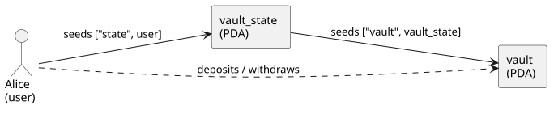
Ownership
Who owns each account is not who you’d guess. The vault holds Alice’s money, but Alice does not own it, and neither does the vault program: the System program owns it (it’s a SystemAccount). The program owns only the vault_state.
Authority
Who authorizes each money movement is the matching half. A deposit is authorized by Alice’s transaction signature (it’s her SOL going in). A withdrawal is authorized by the program signing as the vault PDA (an invoke_signed), because the PDA can’t hold a keypair. Deposit-in by the user, payout-out by the program.
The use cases
The rest of the chapter writes a test for each, and the closing views recover the ownership and authority relationships above from the executed transaction, confirming the model against reality.
The bundle
// src/test_helpers.rs
#[derive(Copy, Clone, Debug, Bundle)]
pub struct VaultAccs {
pub user: Pubkey,
pub vault: Pubkey,
pub vault_state: Pubkey,
}Three fields, one per account the test varies. system_program isn’t among them: every accounts struct declares it as Program<'info, System>, and the derive fills its canonical id. The module is host-only:
// src/lib.rs
#[cfg(not(target_os = "solana"))]
pub mod test_helpers;Each accounts struct carries the cfg_attr that points back at VaultAccs. Here is Initialize (the other three wire up the same way):
// src/instructions/initialize.rs
#[cfg_attr(
not(target_os = "solana"),
derive(anchor_litesvm::BundledPubkeys),
bundled_with(crate::test_helpers::VaultAccs)
)]
#[derive(Accounts)]
pub struct Initialize<'info> {
#[account(mut)]
pub user: Signer<'info>,
#[account(
init,
payer = user,
seeds = [b"state", user.key().as_ref()],
bump,
space = 8 + VaultState::INIT_SPACE
)]
pub vault_state: Account<'info, VaultState>,
#[account(
mut,
seeds = [b"vault", vault_state.key().as_ref()],
bump
)]
pub vault: SystemAccount<'info>,
pub system_program: Program<'info, System>,
}On host builds the cfg_attr derives BundledPubkeys; on the BPF build it vanishes. The full machinery is the bundled-pubkeys chapter.
Setup
The test imports from the program crate and casts one funded actor:
// tests/test_initialize.rs
use anchor_litesvm::{
AnchorContext, AnchorLiteSVM, AssertionHelpers, Keypair, Pubkey, Report, Signer,
};
use vault::{instruction as vix, state::VaultState, test_helpers::VaultAccs};
const LAMPORTS_PER_SOL: u64 = 1_000_000_000;
fn setup() -> (AnchorContext, Keypair) {
// The world every vault test starts from: the deployed program and one
// funded actor, Alice, who opens a vault, moves SOL through it, and closes
// it. The vault's two PDAs depend on Alice's key, so each test derives them
// itself (see `pdas`).
let mut ctx = AnchorLiteSVM::build_with_program(
vault::ID,
"Vault",
include_bytes!("../../../target/deploy/vault.so"),
);
let alice = ctx.cast_actor_with_sol("Alice", 10 * LAMPORTS_PER_SOL);
(ctx, alice)
}cast_actor_with_sol casts Alice in one call: a deterministic keypair (byte-stable across runs), funded with 10 SOL, and aliased under her name. With Alice in hand, derive the two PDAs (state first, then vault off the state), alias them, and build one bundle to reuse:
let (vault_state_pda, state_bump) =
Pubkey::find_program_address(&[b"state", user.as_ref()], &vault::ID);
let (vault_pda, vault_bump) =
Pubkey::find_program_address(&[b"vault", vault_state_pda.as_ref()], &vault::ID);
ctx.alias(vault_pda, "vault").alias(vault_state_pda, "vault_state");
let accs = VaultAccs { user, vault: vault_pda, vault_state: vault_state_pda };Initialize
ctx.tx(&[&alice]).build(accs, vix::Initialize {}).send_ok();
let state: VaultState = ctx.load(&vault_state_pda);
assert_eq!(state.vault_bump, vault_bump);
assert_eq!(state.state_bump, state_bump);ctx.tx(&[&alice]) lists the signers, .build(accs, vix::Initialize {}) projects the bundle and serializes the args, .send_ok() sends and asserts success. The vault state now exists, and its bumps read back.
Deposit
let deposit = LAMPORTS_PER_SOL;
ctx.tx(&[&alice]).build(accs, vix::Deposit { amount: deposit }).send_ok();
ctx.svm.assert_sol_balance(&vault_pda, deposit);Deposit is a System transfer: the program CPIs into System::Transfer, the first nesting the CPI tree shows. Alice signs, and the transfer moves her SOL, so the deposit’s authority is hers.
Withdraw
let withdraw = LAMPORTS_PER_SOL / 2;
ctx.tx(&[&alice]).build(accs, vix::Withdraw { amount: withdraw }).send_ok();
ctx.svm.assert_sol_balance(&vault_pda, deposit - withdraw);Withdraw is the mirror, with one difference: the vault PDA signs the transfer out. The program holds the vault’s seeds and signs the System::Transfer as the vault (an invoke_signed). The CPI tree looks like deposit’s, but the signer is reversed, and a bare log line carries no signer either way. Recovering “the program signed as the vault PDA” is what the authority graph does.
Close
let alice_before_close = ctx.svm.get_balance(&user).unwrap();
ctx.tx(&[&alice]).build(accs, vix::Close {}).send_ok();
assert!(!ctx.account_exists(&vault_pda));
assert!(!ctx.account_exists(&vault_state_pda));
assert!(ctx.svm.get_balance(&user).unwrap() > alice_before_close);Close drains the vault (a PDA-signed transfer) and shuts the state account via Anchor’s close = user, refunding its rent to Alice. get_balance returns Option<u64> (a closed account is None), so we .unwrap() Alice’s, which is always funded. She ends with more than before the close: the remaining lamports plus the reclaimed rent.
A negative probe
Mistaken Identity. Throwaway pubkeys stand in for the seed-constrained vault accounts:
// tests/test_initialize.rs
#[test]
fn initialize_rejects_placeholder_pdas() {
let (mut ctx, alice) = setup();
// Pin only the signer; `vault` and `vault_state` fall to throwaway
// placeholders that can't match the PDAs the program derives.
let accs = VaultAccs { user: alice.pubkey(), ..VaultAccs::default() };
ctx.tx(&[&alice])
.build(accs, vix::Initialize {})
.send_err_named("ConstraintSeeds");
}..VaultAccs::default() fills vault and vault_state with throwaway Pubkey::new_unique() placeholders. Every account except the signer is seed-constrained, so Anchor’s seeds check rejects them, and send_err_named("ConstraintSeeds") asserts that specific failure rather than any error.
What the views show
One call at the end of the test emits the snapshot:
// One call recovers the execution snapshot from the four sends above: the
// authority flow (who signed each transfer, and which transfers the program
// signed as the vault PDA), the account index (every account by owner), and
// the structured logs. It writes target/md-reports/<slug>.md, byte-stable
// because every identity is deterministic.
let mut md = Report::new(
"Vault: the deposit and withdraw lifecycle",
"Alice opens a vault, deposits a SOL, withdraws half, then closes it. \
The views below are recovered from the executed transactions, not hand-drawn.",
);
ctx.report_execution(&mut md);These aren’t descriptions; they’re its actual rendered output, byte-stable because Alice’s identity is deterministic. The authority flow (ctx.authority_story()) recovers who signed each transfer from the execution alone:
sequenceDiagram
autonumber
participant Alice as "Alice (tx signer)"
participant vault as "vault (program-signed)"
participant vault_state as "vault_state (writable)"
note over Alice,vault_state: Vault::Initialize
Alice ->> vault_state: Vault::Initialize ✓
note over Alice,vault_state: Vault::Deposit
Alice ->> vault: System::Transfer ✓
note over Alice,vault_state: Vault::Withdraw
vault ->> Alice: System::Transfer ✓
note over Alice,vault_state: Vault::Close
vault ->> Alice: System::Transfer ✓
Read top to bottom: Alice signs Initialize, then Deposit moves her SOL into the vault. Then the flip: Withdraw and Close are vault ->> Alice, the program signing as the vault PDA to pay her back. Deposit-in by the user, payout-out by the program.
The account index (ctx.account_index()) is the matching ownership view, who owns each account versus who merely wrote it:
Alice (human signer, owned by System)
vault (program-signed, owned by System)
vault_state (program-signed, owned by Vault)
── programs ──
System (owns Alice, vault)
Vault (owns vault_state)
The vault is owned by System, not the Vault program; the program owns only vault_state. A lamport vault is a System-owned account the program controls by PDA signing. PDA-of and owned-by are different.
When you’re ready for a cast that doesn’t trust each other, Escrow is next.
Escrow: Make, Take, Refund
Escrow is where Accounts as Actors becomes concrete: two people who don’t trust each other, a program holding the stakes, a vault custodying the tokens. A maker locks some mint_a into a vault and states what they want back in mint_b; a taker fills the order; or, once the offer expires, the maker refunds. Every snippet is included from book/listings/escrow, a complete project CI builds and tests; clone the repo, cd in, and cargo test to run the suite yourself.
How we model it
A trade in two tokens, escrowed by the program so neither party has to trust the other. The maker locks a deposit of mint_a into a vault (a token account the escrow PDA owns) and opens an escrow account recording the terms: how much mint_b they want back. A taker fills the order by paying that mint_b to the maker and taking the mint_a from the vault. If no taker shows up before the offer expires, the maker refunds.
The cast of characters
| Actor | Kind | Role |
|---|---|---|
| Maker | user (signer) | locks the stake, sets the terms, can refund after expiry |
| Taker | user (signer) | fills the order |
| mint_a / mint_b | mints | the two sides of the trade |
| escrow | PDA (program account) | records the terms (seed, maker, mints, amount, expiry) |
| vault | PDA (token account) | holds the maker’s locked mint_a |
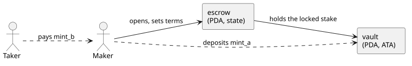
Ownership
The vault holds the maker’s tokens, but the Token program owns it (it’s a token account); the escrow program owns only the escrow state account. The escrow program moves the vault’s tokens by signing as the escrow PDA, the same owner-versus-controller split the vault example introduced.
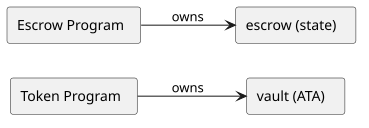
Authority
Each instruction has a different signer. make is signed by the maker (it’s their stake). take is signed by the taker (it’s their fill). refund declares no signer at all: it’s gated on expiry, and the maker is only the fee payer, so the program pays the right maker via a has_one constraint rather than a signature.
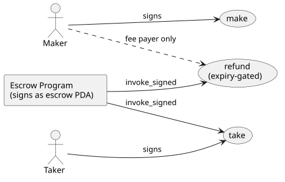
The use cases
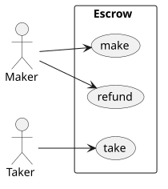
The shared bundle
// src/test_helpers.rs
#[derive(Copy, Clone, Debug, AliasMirror, Bundle)]
pub struct EscrowBundle {
pub maker: Pubkey,
pub taker: Pubkey,
pub mint_a: Pubkey,
pub mint_b: Pubkey,
pub maker_ata_a: Pubkey,
pub maker_ata_b: Pubkey,
pub taker_ata_a: Pubkey,
pub taker_ata_b: Pubkey,
pub escrow: Pubkey,
pub vault: Pubkey,
}One bundle names every account in the trade. Each instruction’s From impl (the bundle derive) takes the subset it needs, so make, take, and refund all build from the same EscrowBundle. The AliasMirror derive registers the whole cast in the alias table in one call.
The cast
// tests/common/mod.rs
pub fn setup(ctx: &mut AnchorContext, seed: u64) -> EscrowWorld {
// The trade this scenario sets up: the maker locks DEPOSIT of mint A and
// wants RECEIVE of mint B in return; a taker holding mint B fills it. We
// build both sides so a test can run make / take / refund against a real
// cast.
// The two parties. `cast_actor` rolls the deterministic keypair, the SOL
// airdrop, and the alias into one call, so each name appears once.
let maker = ctx.cast_actor("Maker");
let taker = ctx.cast_actor("Taker");
// The two tokens being traded, at distinct decimals so a take bug that
// confused mint A with mint B couldn't hide. Each party is the authority
// for the mint it brings. `cast_mint` derives the mint at a deterministic
// address, creates it, and registers the leaf alias ("A", "B").
let mint_a = ctx.cast_mint("A", &maker, MINT_A_DECIMALS);
let mint_b = ctx.cast_mint("B", &taker, MINT_B_DECIMALS);
// What each party brings to the trade, funded in their own ATA: the maker's
// mint-A deposit (what `make` locks away) and the taker's mint-B payment
// (what `take` hands over).
let maker_ata_a = ctx.svm.create_associated_token_account(&mint_a, &maker).unwrap();
ctx.svm.mint_to(&mint_a, &maker_ata_a, &maker, DEPOSIT).unwrap();
let taker_ata_b = ctx.svm.create_associated_token_account(&mint_b, &taker).unwrap();
ctx.svm.mint_to(&mint_b, &taker_ata_b, &taker, RECEIVE).unwrap();
let maker_key = maker.pubkey();
let taker_key = taker.pubkey();
// Addresses the program owns or creates, derived now but not yet on chain:
// `escrow` is the PDA holding the terms; `vault` is the escrow's own ATA for
// mint A, custodying the locked deposit; `taker_ata_a` and `maker_ata_b` are
// the settlement destinations, created `init_if_needed` during `take`, so we
// only derive their addresses here.
let escrow = ctx
.svm
.get_pda(&[escrow::ESCROW_SEED, maker_key.as_ref(), &seed.to_le_bytes()], &escrow::ID);
let vault = get_associated_token_address(&escrow, &mint_a);
let taker_ata_a = get_associated_token_address(&taker_key, &mint_a);
let maker_ata_b = get_associated_token_address(&maker_key, &mint_b);
// The full cast as pubkeys: the bundle every instruction builds from.
let bundle = EscrowBundle {
maker: maker_key,
taker: taker_key,
mint_a,
mint_b,
maker_ata_a,
maker_ata_b,
taker_ata_a,
taker_ata_b,
escrow,
vault,
};
// The leaves named themselves as they were cast (Maker, Taker, A, B); name
// the escrow PDA, then compose each token-account name from its owner and
// mint with `alias_ata`, so the trace reads "Maker/A", "Escrow/A" (the
// vault), and so on. The cast order already aliased every leaf before these
// ATAs compose off them.
ctx.alias(escrow, "Escrow");
ctx.alias_ata(&maker_key, &mint_a); // Maker/A
ctx.alias_ata(&maker_key, &mint_b); // Maker/B
ctx.alias_ata(&taker_key, &mint_a); // Taker/A
ctx.alias_ata(&taker_key, &mint_b); // Taker/B
ctx.alias_ata(&escrow, &mint_a); // Escrow/A (the vault)
EscrowWorld { bundle, maker, taker, mint_a, mint_b }
}The leaves name themselves as they are cast (cast_actor("Maker"), cast_mint("A", ...)), then alias_ata composes each token account’s name from its owner and mint (Maker/A, and the vault as Escrow/A), so the rendered trace never shows a raw pubkey. Every cast derives its address from its name, so committed output diffs cleanly. The maker’s mint_a source is funded with DEPOSIT and the taker’s mint_b with RECEIVE; the program creates the remaining ATAs as it needs them.
Make: a narrated test
make(seed, receive, deposit) records the terms in the escrow account and moves the deposit into the vault. Here’s the whole test:
// tests/test_make.rs
#[test]
fn make_creates_escrow_and_funds_vault() {
let mut md = Report::new(
"Escrow: make creates the escrow and funds the vault",
"The maker opens an escrow offering `deposit` of mint_a in exchange for \
`receive` of mint_b. `make` records the terms in the escrow account and \
moves the full deposit from the maker's source ATA into the vault \
(an ATA owned by the escrow PDA).",
);
let mut ctx = AnchorLiteSVM::build_with_program(escrow::ID, "escrow", PROGRAM_SO);
let w = setup(&mut ctx, SEED);
md.step("Before: maker holds the deposit, vault does not exist yet");
md.snapshot("balances", &balances(&ctx, &w));
md.step("Action: maker calls make(seed, receive, deposit)");
ctx.tx(&[&w.maker])
.build(
w.bundle,
escrow::instruction::Make { seed: SEED, receive: RECEIVE, deposit: DEPOSIT },
)
.send_ok()
.print_markdown_pair();
md.step("After: escrow records the terms; the deposit sits in the vault");
md.snapshot("balances", &balances(&ctx, &w));
// The escrow account round-trips the instruction args. If a future change
// shuffles `state::Escrow`, these checks pin the layout contract for `make`.
let escrow_acct: escrow::Escrow = ctx.load(&w.bundle.escrow);
md.check("escrow.seed", SEED, escrow_acct.seed);
md.check("escrow.maker", w.bundle.maker, escrow_acct.maker);
md.check("escrow.mint_a", w.bundle.mint_a, escrow_acct.mint_a);
md.check("escrow.mint_b", w.bundle.mint_b, escrow_acct.mint_b);
md.check("escrow.receive", RECEIVE, escrow_acct.receive);
// The full deposit moved maker -> vault; checking both ends catches a
// transfer with the wrong amount or direction.
md.check("vault holds the deposit", Some(DEPOSIT), ctx.svm.token_balance(&w.bundle.vault));
md.check("maker source drained", Some(0), ctx.svm.token_balance(&w.bundle.maker_ata_a));
}The Report recorder threads a narrative through the test with four calls:
md.step("...")records a heading for each phase (Before / Action / After).md.snapshot("balances", &...)captures a labelled table of token balances at that moment, so the report shows the deposit move from end to end.md.check("escrow.receive", RECEIVE, escrow_acct.receive)is an assertion and a recorded line: it fails the test on mismatch, and either way writes a pass/fail row into the report..print_markdown_pair()after the send appends the transaction’s CPI tree and a balances pair, in cast names.
The whole thing emits to target/md-reports/<slug>.md: a readable record of exactly what the test did, byte-stable across runs (deterministic identities), so it diffs cleanly in review.
The recorded run: make creates the escrow and funds the vault
The maker opens an escrow offering
depositof mint_a in exchange forreceiveof mint_b.makerecords the terms in the escrow account and moves the full deposit from the maker’s source ATA into the vault (an ATA owned by the escrow PDA).
Before: maker holds the deposit, vault does not exist yet
| account | amount |
|---|---|
| Maker mint_a | 1000000 |
| Maker mint_b | — |
| Taker mint_a | — |
| Taker mint_b | 2000000000 |
| Vault mint_a | — |
Action: maker calls make(seed, receive, deposit)
After: escrow records the terms; the deposit sits in the vault
| account | amount |
|---|---|
| Maker mint_a | 0 |
| Maker mint_b | — |
| Taker mint_a | — |
| Taker mint_b | 2000000000 |
| Vault mint_a | 1000000 |
- escrow.seed:
42 - escrow.receive:
2000000000 - vault holds the deposit:
Some(1000000) - maker source drained:
Some(0)
Take: fill the order
// tests/test_take.rs
#[test]
fn take_and_close_succeeds_late_in_window() {
let mut md = Report::new(
"Escrow: take settles the swap on the last day of the window",
"With an open escrow, the taker calls take: they pay `receive` of mint_b \
to the maker and receive the vault's full mint_a deposit; the vault then \
closes. Run at day 89 of the 90-day window to pin the expiry boundary: \
take is still allowed on the last day.",
);
let mut ctx = AnchorLiteSVM::build_with_program(escrow::ID, "escrow", PROGRAM_SO);
let w = setup(&mut ctx, SEED);
md.step("Setup: maker opens the escrow (make funds the vault)");
ctx.tx(&[&w.maker])
.build(
w.bundle,
escrow::instruction::Make { seed: SEED, receive: RECEIVE, deposit: DEPOSIT },
)
.send_ok()
.print_markdown_pair();
md.snapshot("after make", &balances(&ctx, &w));
md.step("Advance to day 89 (still inside the 90-day window)");
md.note("Picking a value one day short of expiry guards against an off-by-one in the `< expiry` check.");
ctx.svm.advance_days(89);
md.step("Action: taker calls take");
ctx.tx(&[&w.taker])
.build(w.bundle, escrow::instruction::Take {})
.send_ok()
.print_markdown_pair();
md.step("After: the two-sided swap settled; vault closed");
md.snapshot("after take", &balances(&ctx, &w));
md.check("taker received the deposit (mint_a)", Some(DEPOSIT), ctx.svm.token_balance(&w.bundle.taker_ata_a));
md.check("maker received the price (mint_b)", Some(RECEIVE), ctx.svm.token_balance(&w.bundle.maker_ata_b));
md.check("taker's mint_b fully spent", Some(0), ctx.svm.token_balance(&w.bundle.taker_ata_b));
md.check("vault account closed", true, !ctx.account_exists(&w.bundle.vault));
// One call records the execution snapshot across both sends: the authority
// flow (maker and taker sign their own inbound transfers; the Escrow PDA
// signs the vault release and close via invoke_signed), the account index,
// and the structured logs.
ctx.report_execution(&mut md);
}The taker pays receive of mint_b, receives the deposit of mint_a, and the vault closes. Take makes several token-program CPIs, so its CPI tree reads as a sequence of named transfers, and the authority graph shows Taker signing while the escrow program writes the vault.
The recorded run: take settles the swap on the last day of the window
With an open escrow, the taker calls take: they pay
receiveof mint_b to the maker and receive the vault’s full mint_a deposit; the vault then closes. Run at day 89 of the 90-day window to pin the expiry boundary: take is still allowed on the last day.
Setup: maker opens the escrow (make funds the vault)
| account | amount |
|---|---|
| Maker mint_a | 0 |
| Maker mint_b | — |
| Taker mint_a | — |
| Taker mint_b | 2000000000 |
| Vault mint_a | 1000000 |
Advance to day 89 (still inside the 90-day window), one day short of expiry to guard an off-by-one in the < expiry check.
Action: taker calls take
After: the two-sided swap settled; vault closed
| account | amount |
|---|---|
| Maker mint_a | 0 |
| Maker mint_b | 2000000000 |
| Taker mint_a | 1000000 |
| Taker mint_b | 0 |
| Vault mint_a | — |
- taker received the deposit (mint_a):
Some(1000000) - maker received the price (mint_b):
Some(2000000000) - taker’s mint_b fully spent:
Some(0) - vault account closed:
true
The account index and authority diagram for this run are in What the views show below.
Refund: reclaim after expiry
Refund is the maker’s recovery path, gated on time: allowed only once the offer’s window has closed, so a maker can’t yank the deposit out from under a taker mid-trade. advance_days jumps the clock past expiry:
// tests/test_refund.rs
#[test]
fn refund_returns_deposit_and_closes_escrow() {
let mut md = Report::new(
"Escrow: refund returns the deposit after expiry and closes the escrow",
"When no taker shows up before the 90-day window closes, the maker \
recovers: refund (allowed only once expired) returns the vault's full \
mint_a to the maker and closes the vault + escrow (rent back to the \
maker).",
);
let mut ctx = AnchorLiteSVM::build_with_program(escrow::ID, "escrow", PROGRAM_SO);
let w = setup(&mut ctx, SEED);
md.step("Setup: maker opens the escrow (deposit now in the vault)");
ctx.tx(&[&w.maker])
.build(
w.bundle,
escrow::instruction::Make { seed: SEED, receive: RECEIVE, deposit: DEPOSIT },
)
.send_ok()
.print_markdown_pair();
md.snapshot("after make", &balances(&ctx, &w));
md.step("Advance 199 days (past the 90-day window, so refund is allowed)");
ctx.svm.advance_days(199);
md.step("Action: maker calls refund");
md.note("refund declares no Signer; the maker signs only as the transaction fee payer.");
ctx.tx(&[&w.maker])
.build(w.bundle, escrow::instruction::Refund {})
.send_ok()
.print_markdown_pair();
md.step("After: deposit back with the maker; vault + escrow closed");
md.snapshot("after refund", &balances(&ctx, &w));
md.check("maker recovered the deposit", Some(DEPOSIT), ctx.svm.token_balance(&w.bundle.maker_ata_a));
md.check("vault account closed", true, !ctx.account_exists(&w.bundle.vault));
md.check("escrow account closed", true, !ctx.account_exists(&w.bundle.escrow));
}The recorded run: refund returns the deposit after expiry and closes the escrow
When no taker shows up before the 90-day window closes, the maker recovers: refund (allowed only once expired) returns the vault’s full mint_a to the maker and closes the vault + escrow (rent back to the maker).
Setup: maker opens the escrow (deposit now in the vault)
| account | amount |
|---|---|
| Maker mint_a | 0 |
| Maker mint_b | — |
| Taker mint_a | — |
| Taker mint_b | 2000000000 |
| Vault mint_a | 1000000 |
Advance 199 days (past the 90-day window, so refund is allowed)
Action: maker calls refund, which declares no Signer; the maker signs only as the transaction fee payer.
After: deposit back with the maker; vault + escrow closed
| account | amount |
|---|---|
| Maker mint_a | 1000000 |
| Maker mint_b | — |
| Taker mint_a | — |
| Taker mint_b | 2000000000 |
| Vault mint_a | — |
- maker recovered the deposit:
Some(1000000) - vault account closed:
true - escrow account closed:
true
The Betrayal. Inside the window, the same call is the maker pulling the deposit out from under a would-be taker, and it is rejected:
// tests/test_refund.rs
#[test]
fn refund_fails_before_expiry() {
let mut md = Report::new(
"Escrow: refund is rejected before expiry",
"refund is the mirror of take's gate: allowed only after the window \
closes. Inside the window it must fail with EscrowNotExpired, so a maker \
cannot yank the deposit out from under a taker who is mid-flight.",
);
let mut ctx = AnchorLiteSVM::build_with_program(escrow::ID, "escrow", PROGRAM_SO);
let w = setup(&mut ctx, SEED);
md.step("Setup: maker opens the escrow");
ctx.tx(&[&w.maker])
.build(
w.bundle,
escrow::instruction::Make { seed: SEED, receive: RECEIVE, deposit: DEPOSIT },
)
.send_ok()
.print_markdown_pair();
md.step("Advance only 19 days (comfortably inside the 90-day window)");
ctx.svm.advance_days(19);
md.step("Action: maker calls refund while still live → must fail");
let rejection = ctx
.tx(&[&w.maker])
.build(w.bundle, escrow::instruction::Refund {})
.send_err_named("EscrowNotExpired");
md.block(
"rejection logs",
MarkdownBlock::Fenced { lang: "console".into(), body: rejection.logs_structured_string() },
);
md.step("After: the deposit is still escrowed");
md.snapshot("balances", &balances(&ctx, &w));
md.check("vault still holds the deposit", Some(DEPOSIT), ctx.svm.token_balance(&w.bundle.vault));
md.check("escrow account still open", true, ctx.account_exists(&w.bundle.escrow));
}send_err_named("EscrowNotExpired") asserts the transaction failed with that specific error, so a refactor that changes which guard fires breaks the test loudly.
What the views show
These are the actual rendered output of take’s ctx.report_execution(&mut md), not a description. The authority flow (ctx.authority_story()) traces the whole trade, the make deposit and the take settlement, as signed transfers in cast names:
sequenceDiagram
autonumber
participant Maker as "Maker (tx signer)"
participant Taker as "Taker (tx signer)"
participant Escrow as "Escrow (program-signed)"
participant Maker_A as "Maker/A (writable)"
participant Escrow_A as "Escrow/A (writable)"
participant Taker_B as "Taker/B (writable)"
participant Maker_B as "Maker/B (writable)"
participant Taker_A as "Taker/A (writable)"
note over Maker,Taker_A: escrow::Make
Maker ->> Escrow: escrow::Make ✓
Maker ->> Maker_A: Token::TransferChecked ✓
Maker ->> Escrow_A: Token::TransferChecked ✓
note over Maker,Taker_A: escrow::Take
Taker ->> Taker_B: Token::TransferChecked ✓
Taker ->> Maker_B: Token::TransferChecked ✓
Escrow ->> Taker_A: Token::TransferChecked ✓
The last line is the trust point: Escrow ->> Taker_A, the program signing as the escrow PDA to release the vault to the taker. The account index (ctx.account_index()) is the ownership view, every account under its owner:
Maker (human signer, owned by System)
├── Maker/A (ATA · mint A)
└── Maker/B (ATA · mint B)
Taker (human signer, owned by System)
├── Taker/A (ATA · mint A)
└── Taker/B (ATA · mint B)
Escrow (program-signed, owned by escrow)
└── Escrow/A (ATA · mint A)
A (passive, owned by Token)
B (passive, owned by Token)
── programs ──
System (owns Maker, Taker)
Token (owns 7 accounts)
escrow (owns Escrow)
AssociatedToken (derived 5 ATA edges)
The vault (Escrow/A) is owned by the Token program, even though the escrow program is what moves it. The next example, CPAMM, scales the same pattern to a pool with a cast that no longer fits on a sticky note.
CPAMM: A Constant-Product AMM
This is the finale, and it pulls together every thread in the book: the bundle derive at full stretch, the actors model scaling to a cast that no longer fits on a sticky note, an invariant to assert (not just a balance), and rendered output with real CPI depth.
We’ll build against a standard constant-product AMM (a Uniswap-v2-style x·y=k pool): two token mints, a pool that custodies reserves in two vaults, an LP mint that represents a share of the pool, and the operations that move value around it (initialize, add and remove liquidity, swap, plus a few admin paths).
Two things make this chapter different from Vault and Escrow. First, the field names below are real: they’re the account sets from a working AMM (the capstone AMM dogfood port at programs/amm), so the names you read here (mint_x, vault_y, user_x, and friends) are the names that program’s #[derive(Accounts)] structs actually carry. Second, the AMM is where the bundle derive’s second projection mode, BundleFrom, does real work: a swap’s bundle is assembled from two fixtures (a pool and a user) in one call.
How we model it
A constant-product pool custodies reserves of two tokens (mint_x, mint_y) in two vaults, and mints an LP token (mint_lp) that represents a share of those reserves. Liquidity providers deposit both tokens and receive LP shares; traders swap one token for the other, paying a fee; the product of the two reserves, k = reserve_x · reserve_y, may only grow. A config PDA holds the pool state and is the mint authority for the LP token.
The cast of characters
Vault had three actors and Escrow six; a pool has more, and this is where the actors model shows it doesn’t fall apart as the cast grows, because every account is named.
| Actor | Kind | Role |
|---|---|---|
| authority | user (signer) | creates the pool; can lock it and change the fee |
| LP (alice) | user (signer) | adds and removes liquidity |
| trader (bob) | user (signer) | swaps one token for the other |
| mint_x / mint_y | mints | the trading pair (mint_x < mint_y by pubkey) |
| mint_lp | mint | the LP share token (its mint authority is config) |
| config | PDA (program account) | the pool’s state |
| vault_x / vault_y | PDAs (token accounts) | the reserves |

Ownership
The reserves and the LP mint are owned by the Token program; the AMM program owns only the config state account and signs as the config PDA to move the vaults and mint LP shares.

Authority
Each instruction has its signer: the authority for initialize and the admin paths, an LP for liquidity, a trader for swap. The admin paths (set_locked, update_fee) additionally check the signer against config.authority.

The use cases

The bundle, defined once in the program
Two derives do the work, and they sit in different places.
The first is on a host-only bundle struct in the program’s src/. It lists the pubkeys a family of instructions varies over, and it carries two derives: Bundle (which gives it a Default that fills every field with a throwaway Pubkey::new_unique()) and BundleFrom (which projects the bundle out of source fixtures). The #[from_fixtures(...)] attribute names those fixtures and binds them to short names; here p for the pool and u for the user:
// src/instructions/swap.rs
#[cfg(not(target_os = "solana"))]
#[derive(anchor_litesvm::Bundle, anchor_litesvm::BundleFrom, Copy, Clone)]
#[from_fixtures(p: crate::test_helpers::Pool, u: crate::test_helpers::UserAccounts)]
pub struct SwapBundle {
#[from(u.pubkey())]
pub user: Pubkey,
pub mint_x: Pubkey,
pub mint_y: Pubkey,
pub config: Pubkey,
pub vault_x: Pubkey,
pub vault_y: Pubkey,
#[from(u.ata_x)]
pub user_x: Pubkey,
#[from(u.ata_y)]
pub user_y: Pubkey,
}A bare field (no #[from(...)]) projects from the first declared fixture by name, so mint_x becomes p.mint_x. The #[from(...)] overrides handle the user-side fields and renames (user_x from u.ata_x).
The projection rule is worth stating precisely, because it’s the one thing that bites: a bare field (no #[from(...)]) projects from the first declared fixture, by field name. So mint_x: Pubkey with no annotation becomes p.mint_x. Put your primary fixture first (the pool, here, since it owns most of the accounts) and reach for #[from(...)] only when the source is the other fixture or the names disagree. The macro can’t read the fixture structs at expansion time (proc-macros only see their own input), so if a bare field doesn’t actually exist on the first fixture, you get a rustc field-not-found error pointed at the field by name; that’s your signal to add an override.
The second derive is the BundledPubkeys one you’ve seen since the first test, on the instruction’s #[derive(Accounts)] struct. It’s what pairs SwapBundle with the account list and the args, so build knows which bundle goes with which instruction:
// src/instructions/swap.rs
#[derive(Accounts)]
#[cfg_attr(
not(target_os = "solana"),
derive(anchor_litesvm::BundledPubkeys),
bundled_with(SwapBundle)
)]
pub struct Swap<'info> {
#[account(mut)]
pub user: Signer<'info>,
pub mint_x: Box<InterfaceAccount<'info, Mint>>,
pub mint_y: Box<InterfaceAccount<'info, Mint>>,
#[account(
has_one = mint_x,
has_one = mint_y,
seeds = [CONFIG_SEED, config.seed.to_le_bytes().as_ref()],
bump = config.config_bump,
)]
pub config: Box<Account<'info, Config>>,
#[account(mut, associated_token::mint = mint_x, associated_token::authority = config)]
pub vault_x: Box<InterfaceAccount<'info, TokenAccount>>,
#[account(mut, associated_token::mint = mint_y, associated_token::authority = config)]
pub vault_y: Box<InterfaceAccount<'info, TokenAccount>>,
#[account(mut, associated_token::mint = mint_x, associated_token::authority = user)]
pub user_x: Box<InterfaceAccount<'info, TokenAccount>>,
#[account(mut, associated_token::mint = mint_y, associated_token::authority = user)]
pub user_y: Box<InterfaceAccount<'info, TokenAccount>>,
pub token_program: Interface<'info, TokenInterface>,
}Notice what’s absent from SwapBundle: token_program. The accounts struct declares it as Interface<TokenInterface>, and BundledPubkeys recognizes that type and auto-injects the canonical SPL Token id. So the bundle carries only what a test varies. The host-only machinery is gated #[cfg(not(target_os = "solana"))], the same as every other listing, so none of it ships in the BPF build.
The fixtures the bundle projects from
BundleFrom is only useful if there’s something to project from. The AMM defines two fixtures (both in programs/amm/src/test_helpers.rs), and they map onto the two halves of the cast: shared pool state, and per-actor accounts.
// src/test_helpers.rs
#[derive(Copy, Clone, Debug, AliasMirror)]
pub struct Pool {
pub seed: u64,
#[alias(skip)]
pub mint_x: Pubkey,
#[alias(skip)]
pub mint_y: Pubkey,
#[alias("MintLP")]
pub mint_lp: Pubkey,
#[alias("Pool")]
pub config: Pubkey,
#[alias("VaultX")]
pub vault_x: Pubkey,
#[alias("VaultY")]
pub vault_y: Pubkey,
#[alias("LpVault")]
pub lp_vault: Pubkey,
}// src/test_helpers.rs
pub struct UserAccounts {
pub signer: Keypair,
pub label: String,
pub ata_x: Pubkey,
pub ata_y: Pubkey,
}
impl UserAccounts {
pub fn pubkey(&self) -> Pubkey {
self.signer.pubkey()
}
pub fn ata_lp(&self, mint_lp: &Pubkey) -> Pubkey {
get_associated_token_address(&self.signer.pubkey(), mint_lp)
}Two things to notice. First, Pool carries #[derive(AliasMirror)], the fourth member of the bundle family: it generates an alias_all(&self, ctx) that registers every labelled field in the alias table in one call, so the pool’s accounts name themselves in your rendered output. (mint_x / mint_y are #[alias(skip)] because the harness aliases the global mints once at setup; re-aliasing them per pool would be redundant.) Second, UserAccounts is the actor type for the whole suite: one struct covers LPs, traders, admins, and attackers, with the narrative role carried by the variable name and the label, not by the type.
With those in hand, building a bundle is one call: SwapBundle::from((&pool, &user)). A swap touches ten accounts, but the test never spells ten pubkeys; it hands over a pool and a user, and the derive does the projection.
A second bundle shows the override expression doing real work. AddLiquidityBundle needs the user’s LP ATA, which isn’t a plain field on either fixture: it’s computed from a field of each (the user’s key and the pool’s LP mint). The override expression can reference both bound names:
// src/instructions/add_liquidity.rs
#[cfg(not(target_os = "solana"))]
#[derive(anchor_litesvm::Bundle, anchor_litesvm::BundleFrom, Copy, Clone)]
#[from_fixtures(p: crate::test_helpers::Pool, u: crate::test_helpers::UserAccounts)]
pub struct AddLiquidityBundle {
#[from(u.pubkey())]
pub user: Pubkey,
pub mint_x: Pubkey,
pub mint_y: Pubkey,
pub config: Pubkey,
pub mint_lp: Pubkey,
pub vault_x: Pubkey,
pub vault_y: Pubkey,
pub lp_vault: Pubkey,
#[from(u.ata_x)]
pub user_x: Pubkey,
#[from(u.ata_y)]
pub user_y: Pubkey,
#[from(u.ata_lp(&p.mint_lp))]
pub user_lp: Pubkey,
}#[from(u.ata_lp(&p.mint_lp))] is the cross-fixture override: a method on the user fixture that takes a field of the pool fixture. The bundle stays one source of truth for the instruction’s accounts, and the derivation logic (how an LP ATA is computed) stays where it belongs, on UserAccounts.
The AMM’s AddLiquidityBundle and RemoveLiquidityBundle have identical field sets, and stay separate types anyway: build(add_bundle, vix::RemoveLiquidity { .. }) doesn’t compile, because there’s no BuildableIx<AddLiquidityBundle> for instruction::RemoveLiquidity. Two structurally identical bundles, and the BuildableIx invariant still catches add-versus-remove confusion at the call site.
Setup: a Scenario harness for a cast this size
With a cast this size, the per-scenario setup wants its own home. The AMM suite uses a setup() -> Scenario harness (it lives in programs/amm/tests/common/mod.rs) that deploys the program, mints two deterministic global mints, and hands back a Scenario that knows how to mint new actors and pools on demand:
// tests/common/mod.rs
pub fn setup() -> Scenario {
// The world for the AMM tests: a constant-product pool that trades mint X
// for mint Y. Setup casts the authority that initializes the pool and both
// tokens it trades; the pool's own accounts (config PDA, the two vaults, the
// LP mint) derive from the mints, so a fixture builds them per test.
// `build_with_program` registers `"amm"` as the program's alias.
let mut ctx = AnchorLiteSVM::build_with_program(amm::ID, "amm", AMM_BYTES);
// The authority that can mint either token, cast as a funded signer. Each
// mint is cast against it: `cast_mint` derives the mint at a deterministic
// address (which is what keeps the pool PDAs stable), creates it, and
// registers the leaf alias ("MintX", "MintY").
let mint_authority = ctx.cast_actor_with_sol("authority", DEFAULT_SOL);
let mint_x = ctx.cast_mint("MintX", &mint_authority, 6);
let mint_y = ctx.cast_mint("MintY", &mint_authority, 6);
Scenario {
ctx,
mint_authority,
mint_x,
mint_y,
}
}The test-facing API is a few Scenario verbs, each returning the real fixtures the bundles project from:
impl Scenario {
// A funded actor with `x_balance`/`y_balance` minted into fresh ATAs;
// the label is registered in the alias table and carried on the actor.
pub fn user(&mut self, label: &str, x_balance: u64, y_balance: u64) -> UserAccounts { /* ... */ }
// Initialize a brand-new pool with the given fee, returning its admin
// and the derived `Pool` fixture.
pub fn fresh_pool(&mut self, fee_bps: u16) -> (UserAccounts, Pool) { /* ... */ }
// Add liquidity from a user (wraps the AddLiquidity ix shown below).
pub fn deposit(&mut self, lp: &UserAccounts, pool: &Pool, x: u64, y: u64, min_lp: u64) { /* ... */ }
}Three things in that setup carry the determinism the whole suite rests on:
ctx.cast_actor_with_sol("authority", DEFAULT_SOL)casts the mint authority: a keypair derived from its name (so the same name always yields the same pubkey, and committed output diffs cleanly run to run), funded, and aliased, in one call. Thecast_*vocabulary tracks its names and panics on a duplicate, since the name is the seed and a collision would silently alias two casts to one address.ctx.cast_mint("MintX", &mint_authority, 6)casts each token: it derives the mint at a deterministic address (a stable mint pubkey, and stable vaults and ATAs downstream), creates it under the authority, and registers the leaf alias. The mint names itself as it is cast.- The cast names flow straight to rendered output: each cast registers its alias in the context’s table as a side effect, and
pool.alias_all(&mut ctx)(fromAliasMirror) registers a whole pool’s worth of derived accounts at once, so the trace never shows a raw pubkey. To override a name later (a role rotation, say),ctx.alias(pubkey, "NewName")is last-write-wins.
Each test below threads a Report (md), the same recorder the escrow chapter covers in full: md.step titles a phase, md.snapshot and md.block capture a labelled table (the pool’s vaults, the Config), and md.check is an assertion that also records a pass/fail line. The run emits to target/md-reports/<slug>.md; the collapsed block after each step below is that emitted result.
Init: create the pool
fresh_pool initializes a pool at a fresh seed and returns the admin and the derived Pool. Under the hood it builds a plain InitializeBundle (a Bundle with no BundleFrom, filled field by field) and sends Initialize { seed, fee_bps, authority }:
let (_admin, pool) = world.fresh_pool(30);
md.step("Init: the pool opens at 0.30% fee, unlocked");
md.block("config", world.observe_config(&pool));
let config: amm::state::Config = world.ctx.load(&pool.config);
md.check("fee_bps", 30u16, config.fee_bps);load deserializes the Config account and we read the fee back. (Pool::derive(seed, mint_x, mint_y), which fresh_pool calls, computes the pool’s PDAs and ATAs from the seed and the pair, so the test and the program agree on every address.)
The recorded run: the pool opens at 0.30% fee
config
| field | value |
|---|---|
| seed | 0 |
| fee_bps | 30 |
| locked | false |
| authority | set |
- fee_bps:
30
Add liquidity, then assert the invariant
Liquidity provision deposits both tokens and mints LP shares back. The bundle comes straight from the two fixtures, so the eleven-account list never appears in the test:
let alice = world.user("Alice", 10_000, 40_000);
world.deposit(&alice, &pool, 1_000, 4_000, 1);
md.step("Add liquidity: Alice deposits 1,000 X and 4,000 Y");
md.snapshot("pool vaults", &world.observe_pool(&pool));
md.check("vault X seeded", Some(1_000), world.ctx.svm.token_balance(&pool.vault_x));
md.check("vault Y seeded", Some(4_000), world.ctx.svm.token_balance(&pool.vault_y));After it, the pool holds reserves, and we can read the constant product. The AMM-specific readers (a k() helper, a token-conservation check) don’t belong in the framework, so the test keeps them as local helpers; they read the vault balances with world.ctx.svm.token_balance(&pool.vault_x) (which returns Option<u64>, None if the account doesn’t exist) and compute the invariant. This is the right division of labor: the framework gives you the balances, your test knows what they’re supposed to satisfy.
The recorded run: Alice seeds the pool
pool vaults
| account | balance |
|---|---|
| VaultX | 1000 |
| VaultY | 4000 |
| LpVault | 1000 |
- vault X seeded:
Some(1000) - vault Y seeded:
Some(4000)
Swap: the moment the invariant matters
A swap is where a balance assertion isn’t enough; you have to assert a relationship between balances holds across the transaction. The constant product k = reserve_x · reserve_y must not decrease (it grows slightly, by the fee). And the swap is where SwapBundle::from((&pool, &user)) does the most: ten accounts projected from two fixtures, in one line.
The swap’s direction and amounts ride in a SwapKind enum (ExactInput { amount_in, min_amount_out } or ExactOutput { amount_out, max_amount_in }) plus an a_to_b: bool. The suite wraps the boolean in a readable SwapDir::AtoB.a_to_b() helper, but it’s a plain bool underneath:
let bob = world.user("Bob", 1_000, 0);
let k_before = pool_k(&world, &pool);
world
.ctx
.tx(&[&bob.signer])
.build(
amm::SwapBundle::from((&pool, &bob)),
vix::Swap {
kind: SwapKind::ExactInput { amount_in: 100, min_amount_out: 1 },
a_to_b: true,
},
)
.send_ok();
md.step("Swap: Bob trades 100 X for Y; the constant product holds");
md.snapshot("pool vaults", &world.observe_pool(&pool));
let k_after = pool_k(&world, &pool);
md.check("k must not shrink", true, k_after >= k_before);Vault and Escrow asserted where the tokens went; the AMM asserts that a mathematical property survived the transaction.
(Note we assert k_after >= k_before, not equality: the fee means k ratchets up. And we don’t assert a specific k value, since that depends on the deposited amounts; we assert the relationship. Pinning a literal k would be the same mistake as pinning a literal compute count, see Reading Compute & Fees.)
The recorded run: Bob's swap, and the invariant holds
pool vaults (after the swap: 100 X in, Y out)
| account | balance |
|---|---|
| VaultX | 1100 |
| VaultY | 3640 |
| LpVault | 1000 |
- k must not shrink:
true
The negative path: a locked pool
The AMM has an admin path that locks the pool, after which a swap must fail with PoolLocked. Here send_err_named does the work on the Tx chain: same build, different terminator.
// The authority freezes trading; the pool is now locked.
world.set_locked(&admin, &pool, true);
let bob = world.user("Bob", 1_000, 0);
world
.ctx
.tx(&[&bob.signer])
.build(
amm::SwapBundle::from((&pool, &bob)),
vix::Swap {
kind: SwapKind::ExactInput { amount_in: 100, min_amount_out: 1 },
a_to_b: true,
},
)
.send_err_named("PoolLocked");send_err_named asserts the transaction failed and that the named error appears (substring-matched against the logs and the error field), so a refactor that changes which guard fires breaks the test loudly instead of letting a wrong-but-still-failing path pass. The happy and negative paths share every step up to the terminator. (The AMM’s real suite uses this throughout: its slippage tests use the very same SwapBundle::from((&pool, &bob)), swapping only the SwapKind and the terminator to send_err_named("SlippageExceeded").)
The recorded run: a locked pool rejects swaps
The pool authority can freeze trading. After
set_locked(true), a swap that would otherwise succeed is rejected withPoolLocked, and the reserves are left untouched.
A funded, unlocked pool
| account | balance |
|---|---|
| VaultX | 1000 |
| VaultY | 4000 |
| LpVault | 1000 |
After set_locked(true): the swap is rejected, reserves untouched
config
| field | value |
|---|---|
| seed | 0 |
| fee_bps | 30 |
| locked | true |
| authority | set |
pool vaults
| account | balance |
|---|---|
| VaultX | 1000 |
| VaultY | 4000 |
| LpVault | 1000 |
- pool locked:
true
What the deeper nesting shows
A swap CPIs into the token program twice (input into a vault, output back out), so its CPI tree has real depth. That depth is also where a security story hides, and the tree is what makes it legible.
Start with the lock doing its job. The authority freezes the pool, and an honest trader’s swap bounces:
── amm::Swap ───────────────────────────────────────────────
Transaction signers=[Bob]
└── amm::Swap [1] ✗ …cu signer=Bob
└── Error: PoolLocked
Error: InstructionError(0, Custom(6008))
Fee: 5000 lamports
So far so good: locked == true reads as “the pool is paused.” But that signal protects only the users who send one instruction at a time.
The Double Cross. The authority packs unlock, their own swap, and relock into a single atomic transaction:
// The Scenario verbs send one instruction per tx; the attack needs all three
// in ONE atomic transaction, so drop to program().build_ix(...) and send
// them together. The pool is locked; ix #1 unlocks it, ix #2 swaps while it's
// open, ix #3 relocks, all before any other transaction can be sequenced.
let unlock = world.ctx.program().build_ix(
amm::SetLockedBundle { authority: admin.pubkey(), config: pool.config },
vix::SetLocked { locked: false },
);
let swap = world.ctx.program().build_ix(
amm::SwapBundle::from((&pool, &admin)),
vix::Swap {
kind: SwapKind::ExactInput { amount_in: 100_000, min_amount_out: 1 },
a_to_b: true,
},
);
let relock = world.ctx.program().build_ix(
amm::SetLockedBundle { authority: admin.pubkey(), config: pool.config },
vix::SetLocked { locked: true },
);
let attack = world.ctx.send_instructions(&[unlock, swap, relock], &[&admin.signer]);
md.check("the atomic attack succeeds (this is the bug)", true, attack.is_success());By Solana’s atomicity, no other transaction can be sequenced between those three instructions, so the admin trades through a window that, from everyone else’s perspective, never opened. The captured tree is the smoking gun: three sibling top-level frames, all signed by Admin, the middle one a real swap with its two Token::TransferChecked children:
Transaction signers=[Admin]
├── amm::SetLocked [1] ✓ …cu signer=Admin
├── amm::Swap [1] ✓ …cu signer=Admin
│ ├── Token::TransferChecked [2] ✓ …cu
│ └── Token::TransferChecked [2] ✓ …cu
└── amm::SetLocked [1] ✓ …cu signer=Admin
Fee: 5000 lamports
The test asserts this transaction succeeds, which is exactly the bug it surfaces (issue 001): the require!(!locked) guard bounces an honest swap but not an atomic unlock-first, and the mitigation (a timelock on unlock) is planned, not landed. Reading the rejected swap and the passing sandwich side by side is the whole point; the tree makes the attack legible at a glance, which a wall of base58 never would. The name you chose in the cast list comes back out in the rendered output, on a transaction with real surface area.
Full example
The complete runnable AMM suite (init, add and remove liquidity, swap both directions, the locked-pool and slippage failure cases, and the admin paths) is book/listings/cpamm, which CI builds and tests; clone the repo, cd book/listings/cpamm, and cargo test to run it yourself. The walkthrough above is the annotated tour of how the framework’s pieces compose on a program with real surface area: the two-fixture BundleFrom projection, the Scenario harness with deterministic identities, and the Tx chain sharing its build step across the happy and negative paths.
That’s the book. You’ve gone from an empty Cargo.toml (Part I) to asserting a constant-product invariant on a multi-hop swap, with every account a named actor and every transaction renderable four ways. The reference (rustdoc, via cargo doc --no-deps --open) has the exhaustive API.
For Agents
Machine-first documentation for AI agents writing or fixing tests with anchor-litesvm. Every code block on these pages is included from a compiling, CI-tested crate. Humans are welcome, but the book proper (Parts I through V) tells the same story with more explanation.
If you arrived holding an error message, go straight to Failure Modes and search for the exact string.
Connecting an agent
These pages are published in agent-native forms alongside the book, with all code includes resolved:
-
Claude Code (one line; per-project, replace
~with the project root):curl -fsSL https://cds-rs.github.io/anchor-litesvm/agent-skill.tar.gz | tar -xz -C ~/.claude/skills -
Any agent:
https://cds-rs.github.io/anchor-litesvm/llms.txtindexes the corpus as fetchable markdown.
Do not point an agent at the raw book/src/agents/*.md files on GitHub: the
raw markdown still contains unresolved {{#include}} directives where the
code should be. The published forms above are assembled from these pages on
every deploy.
Vocabulary
| term | meaning |
|---|---|
| world | everything a scenario needs, built by one setup function and returned as one struct |
| actor | a named signer: deterministic keypair, funded, aliased (ctx.cast_actor("maker")) |
| prop | a named non-signing account with fabricated state (prop, or prop_mint / prop_token_account for SPL state) |
| cast | derive + fund + alias a named account in one call (actor/cast_actor, cast_actor_with_sol, cast_mint, fund_ata); a duplicate cast name panics |
| alias | a pubkey -> name registration; every rendered output substitutes the name |
| cast list | the discipline: every account a test touches is named before the first send |
| bundle | a struct of pubkeys deriving Bundle/BundledPubkeys; converts into Anchor accounts structs, injecting any Program<'info, T> |
| scenario verb | a suite-owned function that performs one named step (setup, open_session) |
| Report | the narrative object: steps, snapshots, and check assertions, written to target/md-reports/<slug>.md |
| event | a program event registered once (register_events_from_idl / register_event::<E>()), rendered by name and destructured, aliased fields in the structured views |
| TestSVM | the backend trait: one vocabulary, one engine per build |
| finding | an audit claim told as a byte-stable Report another auditor can reproduce |
Decision: what are you writing?
| goal | go to |
|---|---|
| a feature test for a program | Writing Tests |
| a verifiable security finding / auditing existing code | Auditing |
Decision: test shape
| condition | shape |
|---|---|
| default | narrative: thread a Report, md.step each step, md.check as assertions |
| quick unit-style check | plain Arrange // Act // Assert: same calls, no Report |
| documenting a state change / violated invariant | md.transition(before, after, meaning), not a check checklist |
Both shapes use the identical execution surface; the Report is additive.
See Writing Tests.
Decision: dependencies
| program under test | dependency shape |
|---|---|
| Anchor program | git dep on anchor-litesvm, host-only via target cfg; no direct litesvm or solana-* test deps |
| Pinocchio program | optional dep + testing cargo feature; release/SBF graph stays clean |
| same contract, second engine | separate crate outside the workspace; engines never share a lockfile |
See Dependencies.
Decision: backend
| situation | backend |
|---|---|
| default (Anchor or Pinocchio, in-memory) | litesvm (AnchorLiteSVM context or LiteSvmBackend) |
| instruction-level harness for a Pinocchio program | testsvm-mollusk (own build) |
| test against forked or live cluster state | RpcBackend + a surfnet endpoint (feature rpc) |
See Backends.
Rules that prevent rework
- Name every account before the first send; rendered output is only as readable as the cast list.
- Actors and props are deterministic (derived from their name): committed
snapshot files diff clean. Do not use
Keypair::new()for a named role. - Each helper-mediated
sendis its own transaction with a fresh blockhash; resend loops need no blockhash management. - Keep
token_programin account structs used for token CPIs, even where Anchor would let you drop it. - PDAs are named by their role in the scenario (“SpendCap”), never by their slot (“policy_2”).
Writing Tests
One canonical suite shape. The code below is the escrow listing, compiled and run in CI; adapt names, keep the structure.
Anatomy
- World: one
setupfunction builds everything the scenario needs and returns one struct. The suite owns it (tests/common/mod.rs). - Cast list: inside setup, every account is created deterministically and aliased before any instruction runs.
- Act:
ctx.tx(&signers).build(bundle, args).send_ok()(orsend_err_namedfor an expected failure). - Assert:
md.check(label, expected, actual)records and asserts in one call; account state comes fromctx.load(ctx.try_loadfor aResult), balances fromctx.svm.token_balance/ctx.svm.get_balance.
World setup (the scenario verb)
// tests/common/mod.rs
pub fn setup(ctx: &mut AnchorContext, seed: u64) -> EscrowWorld {
// The trade this scenario sets up: the maker locks DEPOSIT of mint A and
// wants RECEIVE of mint B in return; a taker holding mint B fills it. We
// build both sides so a test can run make / take / refund against a real
// cast.
// The two parties. `cast_actor` rolls the deterministic keypair, the SOL
// airdrop, and the alias into one call, so each name appears once.
let maker = ctx.cast_actor("Maker");
let taker = ctx.cast_actor("Taker");
// The two tokens being traded, at distinct decimals so a take bug that
// confused mint A with mint B couldn't hide. Each party is the authority
// for the mint it brings. `cast_mint` derives the mint at a deterministic
// address, creates it, and registers the leaf alias ("A", "B").
let mint_a = ctx.cast_mint("A", &maker, MINT_A_DECIMALS);
let mint_b = ctx.cast_mint("B", &taker, MINT_B_DECIMALS);
// What each party brings to the trade, funded in their own ATA: the maker's
// mint-A deposit (what `make` locks away) and the taker's mint-B payment
// (what `take` hands over).
let maker_ata_a = ctx.svm.create_associated_token_account(&mint_a, &maker).unwrap();
ctx.svm.mint_to(&mint_a, &maker_ata_a, &maker, DEPOSIT).unwrap();
let taker_ata_b = ctx.svm.create_associated_token_account(&mint_b, &taker).unwrap();
ctx.svm.mint_to(&mint_b, &taker_ata_b, &taker, RECEIVE).unwrap();
let maker_key = maker.pubkey();
let taker_key = taker.pubkey();
// Addresses the program owns or creates, derived now but not yet on chain:
// `escrow` is the PDA holding the terms; `vault` is the escrow's own ATA for
// mint A, custodying the locked deposit; `taker_ata_a` and `maker_ata_b` are
// the settlement destinations, created `init_if_needed` during `take`, so we
// only derive their addresses here.
let escrow = ctx
.svm
.get_pda(&[escrow::ESCROW_SEED, maker_key.as_ref(), &seed.to_le_bytes()], &escrow::ID);
let vault = get_associated_token_address(&escrow, &mint_a);
let taker_ata_a = get_associated_token_address(&taker_key, &mint_a);
let maker_ata_b = get_associated_token_address(&maker_key, &mint_b);
// The full cast as pubkeys: the bundle every instruction builds from.
let bundle = EscrowBundle {
maker: maker_key,
taker: taker_key,
mint_a,
mint_b,
maker_ata_a,
maker_ata_b,
taker_ata_a,
taker_ata_b,
escrow,
vault,
};
// The leaves named themselves as they were cast (Maker, Taker, A, B); name
// the escrow PDA, then compose each token-account name from its owner and
// mint with `alias_ata`, so the trace reads "Maker/A", "Escrow/A" (the
// vault), and so on. The cast order already aliased every leaf before these
// ATAs compose off them.
ctx.alias(escrow, "Escrow");
ctx.alias_ata(&maker_key, &mint_a); // Maker/A
ctx.alias_ata(&maker_key, &mint_b); // Maker/B
ctx.alias_ata(&taker_key, &mint_a); // Taker/A
ctx.alias_ata(&taker_key, &mint_b); // Taker/B
ctx.alias_ata(&escrow, &mint_a); // Escrow/A (the vault)
EscrowWorld { bundle, maker, taker, mint_a, mint_b }
}The shortcut form: ctx.cast_actor("maker") replaces the registry dance
(deterministic keypair, 100 SOL, aliased), ctx.cast_actor_with_sol(name, lamports) casts at an exact stake, and ctx.cast_account("recipient") covers
passive accounts. For token plumbing, ctx.cast_mint(name, &authority, decimals)
casts a mint and ctx.fund_ata(&owner, &mint, &authority, amount) hands a holder
a balance in its aliased ATA, each in one call.
Happy path, narrative shape
// tests/test_make.rs
#[test]
fn make_creates_escrow_and_funds_vault() {
let mut md = Report::new(
"Escrow: make creates the escrow and funds the vault",
"The maker opens an escrow offering `deposit` of mint_a in exchange for \
`receive` of mint_b. `make` records the terms in the escrow account and \
moves the full deposit from the maker's source ATA into the vault \
(an ATA owned by the escrow PDA).",
);
let mut ctx = AnchorLiteSVM::build_with_program(escrow::ID, "escrow", PROGRAM_SO);
let w = setup(&mut ctx, SEED);
md.step("Before: maker holds the deposit, vault does not exist yet");
md.snapshot("balances", &balances(&ctx, &w));
md.step("Action: maker calls make(seed, receive, deposit)");
ctx.tx(&[&w.maker])
.build(
w.bundle,
escrow::instruction::Make { seed: SEED, receive: RECEIVE, deposit: DEPOSIT },
)
.send_ok()
.print_markdown_pair();
md.step("After: escrow records the terms; the deposit sits in the vault");
md.snapshot("balances", &balances(&ctx, &w));
// The escrow account round-trips the instruction args. If a future change
// shuffles `state::Escrow`, these checks pin the layout contract for `make`.
let escrow_acct: escrow::Escrow = ctx.load(&w.bundle.escrow);
md.check("escrow.seed", SEED, escrow_acct.seed);
md.check("escrow.maker", w.bundle.maker, escrow_acct.maker);
md.check("escrow.mint_a", w.bundle.mint_a, escrow_acct.mint_a);
md.check("escrow.mint_b", w.bundle.mint_b, escrow_acct.mint_b);
md.check("escrow.receive", RECEIVE, escrow_acct.receive);
// The full deposit moved maker -> vault; checking both ends catches a
// transfer with the wrong amount or direction.
md.check("vault holds the deposit", Some(DEPOSIT), ctx.svm.token_balance(&w.bundle.vault));
md.check("maker source drained", Some(0), ctx.svm.token_balance(&w.bundle.maker_ata_a));
}The plain Arrange // Act // Assert shape is this test minus the Report:
build the context, call setup, send, then assert_eq! on the same accessors.
Prefer the narrative shape in a suite; the Markdown reports it writes under
target/md-reports/ double as committed, byte-reproducible baselines.
Expected failure, with the clock
// tests/test_refund.rs
#[test]
fn refund_fails_before_expiry() {
let mut md = Report::new(
"Escrow: refund is rejected before expiry",
"refund is the mirror of take's gate: allowed only after the window \
closes. Inside the window it must fail with EscrowNotExpired, so a maker \
cannot yank the deposit out from under a taker who is mid-flight.",
);
let mut ctx = AnchorLiteSVM::build_with_program(escrow::ID, "escrow", PROGRAM_SO);
let w = setup(&mut ctx, SEED);
md.step("Setup: maker opens the escrow");
ctx.tx(&[&w.maker])
.build(
w.bundle,
escrow::instruction::Make { seed: SEED, receive: RECEIVE, deposit: DEPOSIT },
)
.send_ok()
.print_markdown_pair();
md.step("Advance only 19 days (comfortably inside the 90-day window)");
ctx.svm.advance_days(19);
md.step("Action: maker calls refund while still live → must fail");
let rejection = ctx
.tx(&[&w.maker])
.build(w.bundle, escrow::instruction::Refund {})
.send_err_named("EscrowNotExpired");
md.block(
"rejection logs",
MarkdownBlock::Fenced { lang: "console".into(), body: rejection.logs_structured_string() },
);
md.step("After: the deposit is still escrowed");
md.snapshot("balances", &balances(&ctx, &w));
md.check("vault still holds the deposit", Some(DEPOSIT), ctx.svm.token_balance(&w.bundle.vault));
md.check("escrow account still open", true, ctx.account_exists(&w.bundle.escrow));
}send_err_named("EscrowNotExpired") asserts the failure by its Anchor error
name; no error-code arithmetic. ctx.svm.advance_days(19) moves the clock
(seconds/slots variants exist; warp_to_timestamp pins an absolute time).
send_err_named is Anchor-context sugar. A suite on the bare TestSVM
trait (a Pinocchio program on mollusk, say) asserts on
model::Transaction::error instead; see
Backends.
Policy loops
Each helper-mediated send is its own transaction under a fresh blockhash, so a rate-limit or spend-cap test resends the identical instruction in a plain loop; no blockhash management appears anywhere in the test:
for _ in 0..3 {
ctx.tx(&[&payer])
.build(w.bundle, program::instruction::Spend { amount: 10 })
.send_ok();
}Events
Register a program’s events once, at setup, and the structured views render
them by name with destructured, alias-substituted fields (🔔 Transfer { from: maker, amount: 100 }) instead of the raw Program data: blob. One line pulls
every event from the IDL:
ctx.register_events_from_idl(include_str!("../../target/idl/my_program.json"));Per type instead of the whole IDL: ctx.register_event::<my_program::events::Transfer>()
(the event must #[derive(Debug)]). Registration rides on the backend, so every
send afterward carries it and the events appear in the CPI tree, the mermaid
note, and so in report_execution; nothing is attached per result.
A program that emits via self-CPI rather than a Program data: log (an
emit_cpi! engine, or a Pinocchio program on the bare TestSVM trait) registers
a decoder through register_cpi_event(program_id, prefix, name, decoder)
instead; the program id is part of the key, since the self-CPI tag is shared
across anchor-compatible programs.
Snapshots
End a transacting test with ctx.report_execution(&mut md) to append the
execution overview (CPI tree, named actors, compute). Because every actor is
deterministic, the file is byte-stable and belongs in version control as a
regression baseline.
report_execution (and spotlight) are main-line only. On the
compat/anchor-0.31 line, assemble the report from the log-based pieces it
does have, logs_structured_string(), mermaid_string(), and
print_markdown_pair(), since the trace-based execution snapshot isn’t
available there. See Anchor Version Compatibility.
When you splice a rendered piece into a Report by hand with md.block, match
the block type to the content. MarkdownBlock::Fenced { lang, body } wraps
plain text in a fresh code fence (the CPI tree, a log dump). MarkdownBlock::Raw(..)
splices a fragment that already carries its own fence, verbatim. The graph and
mermaid strings (authority_graph_string, ownership_graph_string,
mermaid_string) are already ```mermaid blocks, so they go in as Raw;
wrapping one in Fenced nests it inside a text code block, and it renders as
source instead of a diagram.
Dependencies
One rule above all: test code names anchor-litesvm (or testsvm /
testsvm-mollusk) and nothing else. The framework re-exports everything a
test needs (Keypair, Pubkey, Signer, Report, the harness); a direct
litesvm or solana-* dev-dependency creates the version-alignment problem
the facade exists to prevent. Which litesvm actually runs your tests is the
framework’s resolved dependency; see “Which litesvm runs your tests” in
Installation.
Anchor program
The dependency is host-only (a target cfg keeps it out of the BPF binary),
and there are no [dev-dependencies] at all:
[target.'cfg(not(target_os = "solana"))'.dependencies]
anchor-litesvm = { git = "https://github.com/cds-rs/anchor-litesvm", branch = "turbin3" }
This is the vault listing’s real manifest. test_helpers modules that hold
derive impls live in src/ behind #[cfg(not(target_os = "solana"))],
satisfying the orphan rule without touching the on-chain build.
Pinocchio program
Tests must not alter how the program is written or shipped. We use the
standard Serde-style feature-gated derive pattern: an optional dependency,
enabled only by the testing feature, with its derive attached via
cfg_attr:
[dependencies]
litesvm-pinocchio = { version = "0.4", optional = true }
[features]
testing = ["dep:litesvm-pinocchio"]
#[cfg_attr(feature = "testing", derive(litesvm_pinocchio::Discriminator))]
#[repr(u8)]
pub enum Instruction { /* ... */ }Run tests with --features testing. The acceptance proof, run it after any
manifest change:
cargo tree -e normal
should show litesvm-pinocchio (and every other testing-only dependency)
absent from the normal dependency graph, which demonstrates that the
testing feature cannot affect the release/SBF artifact.
Same contract, second engine
Engines never share a dependency graph. A suite that targets a second engine is a separate crate, excluded from the workspace, with its own lockfile; “cross-engine” means rebuilding the same test against a different backend, never linking two engines together. The shipped mollusk adapter is the canonical example of the shape:
[package]
name = "testsvm-mollusk"
version = "0.4.0"
edition = "2021"
license = "MIT"
repository = "https://github.com/brimigs/anchor-litesvm"
description = "TestSVM adapter for mollusk-svm: Pinocchio-program suites run the same conformance scenarios on mollusk, in a graph that carries no litesvm."
# Deliberately OUTSIDE the workspace (root Cargo.toml `exclude`): the mollusk
# graph (agave-4.0 tilde pins) and the litesvm graph (solana 3.4 pins) cannot
# share one lockfile. Same test, different backend, rebuild.
[dependencies]
testsvm = { path = "../testsvm" }
mollusk-svm = "0.13.1"
solana-svm-log-collector = "4.0"
solana-account = "3.2"
solana-keypair = "3.1"
solana-message = "3.1"
solana-pubkey = "3.0"
solana-clock = "3.0"
solana-signer = "3.0"
solana-instruction = "3.2"
solana-system-interface = "3.1"
Backends
One trait (TestSVM), one engine per build. A test written in the trait’s
verbs runs on any engine; switching engines is a manifest change and a
rebuild, never a runtime branch.
The matrix
| backend | crate (feature) | engine | reset | fees | structured CPI |
|---|---|---|---|---|---|
LiteSvmBackend | litesvm-utils / anchor-litesvm | in-memory litesvm | instant | yes | litesvm’s own parser |
RpcBackend | litesvm-utils (feature rpc) | surfnet over JSON-RPC | endpoint-dependent | no | via canonical log parse |
MolluskBackend | testsvm-mollusk (own build) | mollusk-svm | instant | no | via canonical log parse |
A backend declares what it can populate, and reports annotate degraded output instead of silently rendering partial diagrams:
#[derive(Debug, Clone, Copy, PartialEq, Eq)]
pub struct Capabilities {
/// Whether `model::Transaction::trace` is populated (the authority
/// diagram needs it).
pub per_frame_trace: bool,
/// Whether `frames` came from structured facts (vs the canonical log parse).
pub structured_cpi: bool,
/// Whether a multi-ix `send` is one atomic, budget-shared transaction.
pub atomic_send: bool,
/// Whether the engine models fees (`fee: Some(..)`).
pub fees: bool,
/// Whether a full per-test reset is cheap (rebuild the VM) vs requiring
/// namespacing on a shared endpoint.
pub instant_reset: bool,
/// Whether the endpoint forks live cluster state.
pub fork: bool,
}The trait
The required verbs are the trait-core below. Default methods build the cast
vocabulary on top of them: actor, prop / prop_at, deploy_from_file,
label, the cast-name guard (a duplicate cast name panics on every engine), and
the register_* naming sockets. The token extension TokenTestSVM
(blanket-implemented for every TestSVM) adds prop_mint, prop_token_account,
and alias_ata, hand-packing the stable SPL layouts with no token-crate
dependency.
pub trait TestSVM {
/// Build a transaction from `ixs` (`signers[0]` is the fee payer), send
/// it, and return what the engine witnessed. One atomic transaction: all
/// ixs succeed or none persist, shared CU budget; an engine that cannot
/// honor atomicity must say so in `capabilities()`. A program-level
/// failure is carried in [`model::Transaction::error`]; only a malformed
/// build panics.
fn send(&mut self, ixs: &[Instruction], signers: &[&Keypair]) -> model::Transaction;
/// Fund an address with lamports (airdrop in memory; a faucet/cheatcode
/// or real transfer over RPC).
fn fund_sol(&mut self, address: &Pubkey, lamports: u64);
/// Write an account's full state (lamports, data, owner): the state
/// fabrication lever. Every engine has it natively (litesvm
/// `set_account`, mollusk's account store, surfpool's
/// `surfnet_setAccount` cheatcode); tests use it to fabricate state a
/// real flow would have built elsewhere (a mint, a foreign PDA).
fn set_account(&mut self, address: &Pubkey, account: Account);
/// Post-execution owner of an account (drives the ownership graph).
fn account_owner(&self, pubkey: &Pubkey) -> Option<Pubkey>;
/// Read an account's full state.
fn get_account(&self, pubkey: &Pubkey) -> Option<Account>;
/// Make a program available at `program_id`.
fn deploy_program(&mut self, program_id: Pubkey, bytes: &[u8]);
/// Move the clock so the next execution sees at least this slot. On
/// litesvm/mollusk the clock moves only when warped; surfpool's ticks in
/// real time, so this is a floor, not a freeze.
fn warp_to_slot(&mut self, slot: u64);
/// Set the Clock sysvar's `unix_timestamp` (seconds); other Clock fields
/// unchanged.
fn warp_to_timestamp(&mut self, unix_timestamp: i64);
/// The clock the engine will present to the next execution.
fn clock(&self) -> Clock;
fn capabilities(&self) -> Capabilities;
/// The engine's alias table, read access. The socket the naming default
/// methods build on ([`label`](Self::label), and the token aliasing in
/// [`TokenTestSVM`](crate::token::TokenTestSVM)): every adapter already
/// holds an [`Aliases`](crate::aliases::Aliases) for `register_alias`, so it
/// returns a borrow and inherits the naming surface for free.
fn aliases(&self) -> &crate::aliases::Aliases;
}AnchorContext is itself a TestSVM engine (Anchor-flavored, over in-memory
litesvm): it inherits this whole vocabulary as default methods and is usable
anywhere a &mut impl TestSVM is expected, with its Anchor-specific sugar
(cast_actor, cast_mint, fund_ata, try_load / load) layered on top.
Recipes
litesvm, Anchor suite (the default; the whole book runs on this):
let mut ctx = AnchorLiteSVM::build_with_program(program::ID, "program", PROGRAM_SO);litesvm, trait-level (framework-agnostic suites):
let mut svm = LiteSvmBackend::new(LiteSVM::new());
svm.deploy_from_file(&PROGRAM_ID, "target/deploy/program.so", "program");
let payer = svm.actor("payer", 10_000_000_000);mollusk, Pinocchio suite (in the excluded crate’s own build):
let mut svm = MolluskBackend::new();
svm.deploy_from_file(&PROGRAM_ID, "target/deploy/program.so", "program");
svm.register_program_instructions(&PROGRAM_ID, program::Instruction::instruction_names());surfnet over RPC (feature rpc; the endpoint must be running):
let mut svm = RpcBackend::new("http://127.0.0.1:8899");token fabrication, any engine (use testsvm::token::TokenTestSVM;): fabricate
token state a real flow would have built elsewhere, instead of hand-packing it:
let mint = svm.prop_mint("USDC", 6, &authority);
let holder = svm.prop_token_account("alice.usdc", &mint, &alice, 1_000_000);prop_mint (82-byte SPL mint) and prop_token_account (165-byte token account
at the canonical (owner, mint) ATA) write the bytes directly with no CPI, so
they work on mollusk and litesvm alike. A Pinocchio token suite reaches for these
instead of Mint::pack / Account::pack + prop.
Asserting failure at the trait level
send never panics on a program failure; it returns the transaction with
error: Some(message). The send_err_named sugar belongs to the Anchor
context and does not exist here; assert on the model:
let tx = svm.send(&[ix], &[&funder]);
let err = tx.error.expect("must be rejected");
assert!(err.contains("Provided seeds do not result in a valid address"));
assert!(svm.get_account(&addr).is_none(), "failed sends persist nothing");A failed send commits no state on any engine: an address the transaction
would have created reads back as None.
Choosing
- Default to litesvm. It is the fastest reset and the only engine the
higher-level
AnchorContextsugar targets. - Use mollusk when the suite must run where mollusk already runs
(instruction-level Pinocchio harnesses); the vocabulary is identical, fees
are absent (
fee: None,capabilities().fees == false). - Use
RpcBackendto exercise forked or live cluster state; the clock ticks in real time there, sowarp_to_slotis a floor, not a freeze.
Auditing
A different mode from the rest of the corpus: not a developer writing feature
tests, but an auditor producing a finding another auditor can verify. The
deliverable is a byte-stable Report, so the claim is something you point at,
not something you assert.
Two tiers of observability
Which tier reaches your target is a property of the code, not a choice.
| tier | reaches | how |
|---|---|---|
| engine-grounded | only code the SVM executes | CPI trees, structured logs, the engine as oracle |
| report-narrated | any host-callable code, including a library the engine never runs | Report + transition + expect_panic |
A bug in a parser, codec, or math crate with no on-chain entrypoint is
invisible to the engine until some program uses it. Until then, the
report-narrated tier is the one that reaches it, and a Report is the unit of
a verifiable audit claim.
The engine as oracle
When the target does have a runtime counterpart, let the engine establish ground truth and assert the target agrees with it. For a parser of signed data: the engine accepts a real signature and rejects a forged one, and the parser must read back exactly the bytes the runtime judged.
let tx = svm.send(&[real_ix], &[&payer]);
assert!(tx.error.is_none()); // the runtime verified it
let parsed = Target::parse(&data)?; // the target must agree
assert_eq!(parsed.signer(), expected);
// The scandal: a forged input the runtime rejects may still parse cleanly.
let tx = svm.send(&[forged_ix], &[&payer]);
assert!(tx.error.is_some()); // the runtime caught it
let parsed = Target::parse(&forged)?; // ...but a parser is not a verifierThat gap (parses but does not verify) is itself a finding: a consumer must gate on the runtime’s verdict, never on parse success.
The finding as a Report
Name the threat in the title and intent, show the crafted input, and assert.
For a state change, especially a violated invariant, a - [x] checklist
reads as “all good”; use transition, whose rendered before/after row is the
finding. The diff is the evidence.
/// Record a state change as before -> after -> what it means, with teeth.
///
/// For reports that document a transition (especially a *violated*
/// invariant), [`check`](Report::check)'s checklist rendering works
/// against the reader: `- [x]` rows of confirmed violations read as a
/// passing feature list. `transition` renders a neutral table instead
///
/// | Observation | Before | After | What it means |
/// |---|---|---|---|
/// | yes_votes | 0 | 255 | `-= 1` underflowed |
///
/// and still asserts: `actual_after` is compared against
/// `expected_after`, SOFT like `check` (recorded now, the test fails at
/// `Drop` if any row missed), so presentation and enforcement never
/// split. Consecutive `transition` calls collapse into one table.
pub fn transition<T: PartialEq + Debug>(
&mut self,
label: impl Into<String>,
before: T,
expected_after: T,
actual_after: T,
meaning: impl Into<String>,
) -> &mut Self {
self.events.push(Event::Transition {
label: label.into(),
before: format!("{before:?}"),
expected: format!("{expected_after:?}"),
actual: format!("{actual_after:?}"),
meaning: meaning.into(),
pass: expected_after == actual_after,
});
self
}A structural-trust finding falls straight out of it: parse a sensible input, then one with a single field edited, and let the table show the silent change.
md.transition(
"reported signer (head)",
head(&sensible), // before
head(&tampered), // expected (we predict the unsafe behavior)
head(&tampered), // actual
"one field edit re-points the signer; the parse succeeds either way",
);The test passes because it confirms the predicted behavior; the title and the “what it means” column carry the judgment. A passing audit test means “reproduced”, and the committed report is the reproduction.
Known-unsafe paths
Some findings are a panic or worse. Park a defined panic as a deliberate
RED (expected) artifact with expect_panic (pair it with
#[should_panic]), so the report records it without the run aborting.
#[test]
#[should_panic]
fn the_unguarded_path_aborts() {
let mut md = Report::new("title", "intent");
md.expect_panic("empty input indexes data[0]; no length guard precedes it");
let _ = Target::parse(&[]); // aborts here; the report flushes RED (expected)
}For undefined behavior, do not run it. A test must not invoke UB (an out-of-bounds read may pass, segfault, or do anything). Describe it in the report’s intent and demonstrate the guard’s absence by contrast: the same input that is UB in one build configuration is a clean rejection in another.
Assembling the audit
Collect the per-finding Reports into one committed artifact. A just audit
recipe wipes target/md-reports/, runs the finding suite (both sides of any
feature seam, since the contrast is the finding), and concatenates the files
in LC_ALL=C order behind a GENERATED, do not edit banner. Because every
finding is deterministic, the artifact is byte-stable: regenerating it is a
no-op unless a finding changed, so its diff is a change in findings.
Failure Modes
Indexed by the literal error text. Search this page for the string you are holding.
| error contains | cause | fix |
|---|---|---|
AlreadyProcessed / already been processed | identical transaction, same blockhash, sent through raw litesvm | send through the helpers (fresh blockhash per send), or ctx.svm.expire_blockhash() before the raw resend |
EntrypointOutOfBounds | the .so is an entrypoint-less stub (feature-gated entrypoint! compiled out) | rebuild with the program’s SBF features, e.g. cargo build-sbf -- --no-default-features --features sbf |
Unknown program (during a token CPI) | token_program dropped from the accounts struct | keep the field; invoke needs the program account even where Anchor’s lints say it is removable |
InvalidProgramId | a bundle injected or was overridden with the wrong program for a typed Program<'info, T> field | check the field’s T; the conversion injects <T as Id>::id(). Overriding it past the type is the test’s bug, not the derive’s |
Stack offset of ... exceeded max offset | an oversized stack frame in the program (large Accounts struct or big locals) | Box the large accounts in the program; this is a program bug the framework surfaced, not a harness limit |
Attempt to debit an account but found no record of a prior credit | the signer was never funded | declare it as an actor (ctx.cast_actor(name) / svm.actor(name, lamports)) instead of a bare Keypair::new() |
Provided seeds do not result in a valid address | InvalidSeeds: an account’s address does not match the program’s derivation (a non-derived PDA or ATA passed in) | pass the derived address; in a negative test, assert on this string directly. It is a builtin ProgramError, so register_program_errors does not apply |
InstructionError(_, Custom(2)) from a precompile (ed25519/secp256k1) | PrecompileError::InvalidSignature: the runtime rejected a forged or malformed signature instruction | expected on the forgery path of a signature audit; assert on Custom(2). Precompile errors are a third naming category (not a program’s custom error, not a builtin message); no registry names them |
deploy_from_file: ... bytes — likely an entrypoint-less stub | same as EntrypointOutOfBounds, caught before deploy | same rebuild; the panic message names the path it read |
send_err_named panic: error name mismatch | the program failed, but with a different error than the test expected | read the structured logs in the panic output; the failing frame renders Name (0xcode) when the error table is registered |
Notes
AlreadyProcessedshould not appear in helper-mediated suites. Everyctx.tx(..)/execute_instructionsend refreshes the blockhash first. If you see it, the send bypassed the helpers; prefer routing it through them over scatteringexpire_blockhashcalls.- A sub-4-KiB
.sois almost never a real program. A plaincargo build-sbfagainst a crate whoseentrypoint!sits behind a feature yields an ~896-byte shell.deploy_from_filerejects these with a diagnosis instead of letting the load fail later. - Error names come from registration; builtins come from the runtime.
Anchor programs get names decoded from logs automatically; Pinocchio
programs register tables once via the derives
(
register_program_instructions/register_program_errors), and failed frames renderInvalidAmount (0x7)at any CPI depth. Registration covers custom program errors only; a builtinProgramError(InvalidSeeds,IncorrectProgramId, …) renders as the runtime’s own message, so negative tests assert on that string.
Upgrade Notes (turbin3)
For suites pinned to branch = "turbin3". Each section describes a branch
forward; the newest is first. cargo update -p anchor-litesvm picks it up.
June 2026: the testsvm vocabulary
If your tests use the surface this book teaches (ctx.tx().build().send_ok(),
cast verbs, bundles, Report), there is nothing to change. Everything below
is additive except two type renames at the backend layer.
Renames
| was | is |
|---|---|
ExecutionBackend | TestSVM (trait, testsvm crate; re-exported from litesvm_utils) |
ExecutionRecord | model::Transaction |
The old names are gone, not aliased. They only ever mattered if you named the
backend trait directly (for example, to hold a RpcBackend behind a generic);
update the two identifiers and the same code compiles.
New since the last forward
TestSVM: one trait describing a test runtime;LiteSvmBackendis the default engine,RpcBackend(featurerpc) targets a surfnet endpoint, and thetestsvm-molluskcrate runs the same vocabulary on mollusk-svm for Pinocchio programs. Engines never share a dependency graph; pick one per build.- Bundles inject programs by structure: any
Program<'info, T>field in your accounts struct injects<T as Id>::id()in the generated conversion. The fixed table of well-known programs is gone; your ownIdtypes work the same asSystem.#[bundle(inject = expr)]covers untyped fields,#[bundle(default = expr)]pins a bundle field’s placeholder, andYourAccounts::injected_programs()feedsctx.alias_programs(..)so CPI trees name them. Option<Pubkey>bundle fields derive like any other field.- Pinocchio support:
litesvm-pinocchio-derive(additivetesting-feature derives for instruction/error tables) andlitesvm-pinocchio-idl(IDL extraction from an annotated enum). Anchor suites are unaffected.
Workspace note: testsvm-mollusk is deliberately outside the workspace (its
mollusk graph and the litesvm graph cannot share a lockfile). A git dependency
on anchor-litesvm never builds it.
Anchor Version Compatibility
The framework ships on two lines. Default to the main line; reach for the compatibility line only when a dependency pins an older Anchor.
| line | branch | Anchor | use it when |
|---|---|---|---|
| main | turbin3 | 1.0+ | the default: the full surface |
| compat | compat/anchor-0.31 | 0.31 | a dependency forces Anchor 0.31 (Metaplex mpl-core) |
The compat line exists for one reason: mpl-core (Metaplex Core) pins
anchor-lang 0.31, so a program that CPIs into it cannot build against the main
line until mpl-core supports a newer Anchor. Point the dependency at the branch:
anchor-litesvm = { git = "https://github.com/cds-rs/anchor-litesvm", branch = "compat/anchor-0.31" }
What the compat line has
The AnchorContext setup surface is the same: the cast vocabulary (cast_actor,
cast_actor_with_sol, cast_account, cast_mint, fund_ata, alias_ata),
build_with_program_from_file, and the Bundle derives. The account-loading API
matches the main line too: try_load for a Result, load to panic on a missing
or malformed account. And the log-based narration carries over: the Report
recorder, the structured CPI tree (print_logs_structured), the mermaid sequence
diagrams, and print_markdown_pair.
A litesvm + Anchor test reads identically on either line:
let mut ctx = AnchorLiteSVM::build_with_program(program::ID, "program", PROGRAM_SO);
let maker = ctx.cast_actor("maker");
let mint = ctx.cast_mint("A", &maker, 6);
let acct: MyState = ctx.load(&pda);What it lacks
The compat line predates the TestSVM trait extraction, so the engine-agnostic
layer isn’t there: no TestSVM trait, no prop_mint / prop_token_account
fabrication, no mollusk or RPC backends, and AnchorContext does not implement
TestSVM. The compat line is litesvm + Anchor only; for Pinocchio or
multi-engine testing, use the main line.
It also lacks the trace-based observability: the authority and ownership graphs
and the per-test execution snapshot (report_execution). These read a per-frame
execution trace recorded through a litesvm callback (invocation-inspect-callback)
that the main line’s litesvm carries but compat’s pinned litesvm 0.6.1 does not.
Closing the gap is a real undertaking rather than a quick port: the callback-bearing
litesvm is on a newer solana than anchor-0.31 and mpl-core allow, so the callback
would have to be backported onto the older litesvm and the trace-consuming renderers
ported alongside it. Until then, the log-based views above (tree, mermaid, Report)
are the narration compat has, since they never touch the trace; for the full suite,
use the main line.
Moving off it
When mpl-core supports a newer Anchor, move the dependency back to turbin3:
the suite inherits the full surface unchanged. The cast vocabulary it already
uses is identical, so the only edit is the branch name. (If you pinned an older
compat commit, it may spell the account loader get_account rather than
try_load/load; rename those call sites.)
Testing Pinocchio Programs
This book teaches Anchor, but the engine under it is not Anchor-specific. The execution layer (litesvm-utils, the TestSVM trait) drives any Solana program; a raw Pinocchio program tests through the same engine, the same observability, the same assertions. What changes is the sugar: Anchor generates types the bundle derive bridges to, Pinocchio generates none, so a handful of conveniences are Anchor-only and you build instructions more directly.
What’s shared
The whole execution and observability surface:
LiteSvmBackend(and the otherTestSVMengines) deploy, fund, and send.svm.actor("name", lamports)casts a funded, deterministic, aliased signer;prop_mint/prop_token_accountfabricate token state. The cast vocabulary, at the trait level.- The CPI tree, mermaid diagrams, authority and ownership graphs, compute and fees.
send_ok/send_err_namedand the assertion helpers.
A Pinocchio test reads like an Anchor one until it builds an instruction.
What’s Anchor-only
The bundle machinery of Part II leans, all of it, on types Anchor generates:
- Bundled Pubkeys: the derive bridges your bundle to Anchor’s
accounts::X/instruction::X. Pinocchio generates neither, so there is no projection to derive. - The builder:
build_ix(bundle, args), and the program-defined ordering it relies on. - The Anchor account loaders (
ctx.loadreads by Anchor’s discriminator).
Building an instruction
With no generated types, you construct the Instruction yourself: the program id, the account metas in the order the program reads them, and the data (the discriminator byte, then the args). Then send it through the engine:
let ix = Instruction {
program_id: MY_PROGRAM_ID,
accounts: vec![
AccountMeta::new(payer.pubkey(), true),
AccountMeta::new(state, false),
AccountMeta::new_readonly(SYSTEM_PROGRAM_ID, false),
],
data: vec![/* discriminator byte, then args */],
};
svm.send(&[ix], &[&payer]);That is the raw form an Anchor bundle hides; on Pinocchio you write it.
Names from one declaration
A Pinocchio program has no IDL. The runtime logs an instruction by its discriminator byte and a failure by custom program error: 0x<code>, never Make or InvalidAmount, so the renderers and send_err_named need a code -> name table. #[derive(Discriminator)] on the instruction enum is the source: one declaration generates the on-chain discriminators and the host-side name table, keyed to declaration order, so they can’t drift (litesvm-pinocchio-idl reads the same enum to emit a solita IDL). Register the table, and the tree shows Make, not [0], and send_err_named("InvalidAmount") works.
The dependency shape
Testing must not change how the program ships. Pinocchio testing is an optional dependency behind a testing feature, the same feature-gated derive pattern Dependencies covers, so cargo tree shows the testing crates absent from the release and SBF graph.
Migrating from Raw LiteSVM
This appendix helps you migrate existing raw-LiteSVM tests to anchor-litesvm. If you’re starting fresh, you want Part I instead; this is for the case where you already have hand-rolled tests and want to see, pattern by pattern, what each one becomes.
Quick migration checklist
- Add
anchor-litesvmas a host-only (target-cfg’d) dependency; drop the rawlitesvmdev-dependency - Add a host-only
test_helpersmodule to your program with a#[derive(Bundle)]struct per instruction (or one shared bundle) - Decorate each
#[derive(Accounts)]struct with the#[cfg_attr(..., derive(BundledPubkeys), bundled_with(...))]line - Replace
LiteSVM::new()withAnchorLiteSVM::build_with_program() - Replace manual discriminator calculation and
Vec<AccountMeta>building withctx.tx(...).build(bundle, args) - Replace manual token operations with
ctx.svmhelper methods - Replace manual assertions with
ctx.svm.assert_*helpers - Drop direct
solana-*dev-dependencies; reach for them through theanchor-litesvmfacade re-exports
Most of this is test-side. The one step that touches your program (not just your tests) is the second and third: the bundle module and the cfg_attr derives. They’re gated to the host build, so nothing changes on chain.
Step by step
Step 1: Update dependencies
Before:
[dev-dependencies]
litesvm = "0.1"
solana-signer = "3.0.0"
After:
[dependencies]
anchor-lang = "1.0.2"
anchor-spl = "1.0.2" # only if your program makes token CPIs
# Host-only: compiled for `cargo test`, never into the BPF binary. It's a
# normal dependency (not a dev-dependency) so the bundle derives, whose impls
# must live in your crate by the orphan rule, can see it from `src/`.
[target.'cfg(not(target_os = "solana"))'.dependencies]
anchor-litesvm = { git = "https://github.com/cds-rs/anchor-litesvm", branch = "turbin3" }
Note there’s no [dev-dependencies] block anymore: the test reaches Keypair, Pubkey, Signer, the harness, and the helpers through the anchor-litesvm facade. (The why behind the target-cfg dance is in Installation & Setup.)
Step 2: Add a bundle and wire the derive
This is the program-side step. For each instruction, name its varying pubkeys in a bundle, in a host-only module:
// src/test_helpers.rs
use anchor_lang::prelude::Pubkey;
use anchor_litesvm::Bundle;
#[derive(Copy, Clone, Debug, Bundle)]
pub struct MakeBundle {
pub maker: Pubkey,
pub escrow: Pubkey,
pub mint_a: Pubkey,
pub mint_b: Pubkey,
pub maker_ata_a: Pubkey,
pub vault: Pubkey,
}// src/lib.rs
#[cfg(not(target_os = "solana"))]
pub mod test_helpers;Then decorate the matching #[derive(Accounts)] struct so the derive can bridge the bundle to it:
#[cfg_attr(
not(target_os = "solana"),
derive(anchor_litesvm::BundledPubkeys),
bundled_with(crate::test_helpers::MakeBundle),
)]
#[derive(Accounts)]
pub struct Make<'info> { /* ... */ }The bundle omits the program accounts (token_program, system_program, associated_token_program); those are auto-injected from their Anchor field types. The full mechanism is Bundled Pubkeys. This replaces the old declare_program! + generated-client step entirely: tests use your program’s own types, so there’s no IDL to generate or keep in an idls/ directory.
Step 3: Update test setup
Before (raw LiteSVM):
use litesvm::LiteSVM;
let mut svm = LiteSVM::new();
svm.add_program(program_id, include_bytes!("../target/deploy/my_program.so"));After:
use anchor_litesvm::AnchorLiteSVM;
let mut ctx = AnchorLiteSVM::build_with_program(
my_program::ID,
"my_program",
include_bytes!("../target/deploy/my_program.so"),
);Savings: 3 lines → 1 line.
Step 4: Replace manual token operations
Before (30+ lines):
let mint = Keypair::new();
let rent = svm.minimum_balance_for_rent_exemption(82);
let create_mint_ix = system_instruction::create_account(
&payer.pubkey(), &mint.pubkey(), rent, 82, &spl_token::id(),
);
let init_mint_ix = spl_token::instruction::initialize_mint(
&spl_token::id(), &mint.pubkey(), &authority.pubkey(), None, 9,
)?;
let tx = Transaction::new_signed_with_payer(
&[create_mint_ix, init_mint_ix], Some(&payer.pubkey()),
&[&payer, &mint], svm.latest_blockhash(),
);
svm.send_transaction(tx)?;
// create token account (another 20+ lines), mint tokens (another 15+)After (3 lines):
let mint = ctx.svm.create_token_mint(&authority, 9)?;
let token_account = ctx.svm.create_associated_token_account(&mint.pubkey(), &owner)?;
ctx.svm.mint_to(&mint.pubkey(), &token_account, &authority, 1_000_000)?;Savings: 65+ lines → 3 lines. (See PDAs & Token Helpers.)
Step 5: Replace manual discriminator and instruction building
The two old chores, computing the 8-byte discriminator by hand and assembling an ordered Vec<AccountMeta>, collapse into a single build/send chain.
Before (25+ lines):
use sha2::{Digest, Sha256};
fn get_discriminator(name: &str) -> [u8; 8] {
let mut hasher = Sha256::new();
hasher.update(format!("global:{}", name));
let result = hasher.finalize();
let mut disc = [0u8; 8];
disc.copy_from_slice(&result[..8]);
disc
}
let accounts = vec![
AccountMeta::new(data_account, false),
AccountMeta::new(user.pubkey(), true),
AccountMeta::new_readonly(system_program::id(), false),
];
let mut data = get_discriminator("initialize").to_vec();
data.extend_from_slice(&borsh::to_vec(&InitializeArgs { value: 42 })?);
let ix = Instruction { program_id, accounts, data };After (one chain):
use my_program::instruction as vix;
let accs = InitializeBundle { data_account, user: user.pubkey() };
ctx.tx(&[&user])
.build(accs, vix::Initialize { value: 42 })
.send_ok();The discriminator is computed for you, the accounts are ordered by the program’s own ToAccountMetas, and the compiler now catches a missing account or a mismatched args type at the call site. The ordered-Vec failure modes this removes are the subject of Named Accounts. (When you need the raw Instruction rather than an immediate send, ctx.program().build_ix(accs, vix::Initialize { value: 42 }) returns it.)
Step 6: Replace manual assertions
Before:
let account = svm.get_account(&pubkey).expect("Account should exist");
let account_data = svm.get_account(&token_account).unwrap();
let token_data = spl_token::state::Account::unpack(&account_data.data)?;
assert_eq!(token_data.amount, 1_000_000, "Wrong balance");
let account = svm.get_account(&user_pubkey).unwrap();
assert_eq!(account.lamports, 10_000_000_000, "Wrong SOL balance");After:
ctx.svm.assert_account_exists(&pubkey);
ctx.svm.assert_token_balance(&token_account, 1_000_000);
ctx.svm.assert_sol_balance(&user_pubkey, 10_000_000_000);Savings: 10+ → 3, with better failure messages. (See Assertion Helpers.)
Pattern-by-pattern comparison
Account creation
| Operation | Raw LiteSVM | anchor-litesvm |
|---|---|---|
| Funded account | Manual airdrop + keypair | ctx.svm.create_funded_account(lamports) |
| Token mint | 30+ lines | ctx.svm.create_token_mint(&auth, decimals) |
| Token account | 20+ lines | ctx.svm.create_associated_token_account(&mint, &owner) |
| Mint tokens | 15+ lines | ctx.svm.mint_to(&mint, &account, &auth, amount) |
PDA operations
Before:
let (pda, bump) = Pubkey::find_program_address(&[b"vault", user.pubkey().as_ref()], &program_id);After:
let pda = ctx.svm.get_pda(&[b"vault", user.pubkey().as_ref()], &program_id);
let (pda, bump) = ctx.svm.get_pda_with_bump(&[b"vault", user.pubkey().as_ref()], &program_id);Transaction execution
Before:
let tx = Transaction::new_signed_with_payer(&[ix], Some(&payer.pubkey()), &[&payer], svm.latest_blockhash());
match svm.send_transaction(tx) {
Ok(_) => println!("Success"),
Err(e) => panic!("Transaction failed: {:?}", e),
}After:
ctx.tx(&[&payer])
.build(accs, vix::Initialize { value: 42 })
.send_ok(); // sends, asserts success, carries your aliases forward(See Executing Transactions.)
Error testing
Before:
let result = svm.send_transaction(tx);
assert!(result.is_err(), "Should have failed");
let error_string = format!("{:?}", result.unwrap_err());
assert!(error_string.contains("InsufficientFunds"));After:
ctx.tx(&[&payer])
.build(accs, vix::Withdraw { amount: too_much })
.send_err_named("InsufficientFunds"); // asserts failure AND the named errorsend_err_named checks both halves: that it failed, and that this error fired. A bare send_err() asserts only the first.
Complete example
Before: raw LiteSVM (~493 lines)
#[cfg(test)]
mod tests {
// ... 10 lines of manual get_discriminator() ...
#[test]
fn test_escrow() {
let mut svm = LiteSVM::new();
svm.add_program(/* ... */);
let maker = Keypair::new();
svm.airdrop(&maker.pubkey(), 10_000_000_000).unwrap();
// create mint (30+ lines), token accounts (40+ lines/account)
// build MAKE instruction by hand (25+ lines of AccountMeta + discriminator)
// execute (10+ lines), verify by unpacking raw account data (20+ lines)
// ... 300+ more lines for TAKE and REFUND ...
}
}After: anchor-litesvm (~106 lines)
use anchor_litesvm::{AnchorLiteSVM, AssertionHelpers, Signer, TestHelpers};
use anchor_escrow::{instruction as vix, test_helpers::EscrowBundle};
#[test]
fn test_escrow() {
let mut ctx = AnchorLiteSVM::build_with_program(
anchor_escrow::ID,
"anchor_escrow",
include_bytes!("../../target/deploy/anchor_escrow.so"),
);
let maker = ctx.svm.create_funded_account(10_000_000_000).unwrap();
let mint_a = ctx.svm.create_token_mint(&maker, 9).unwrap();
let mint_b = ctx.svm.create_token_mint(&maker, 9).unwrap();
let maker_ata_a = ctx.svm.create_associated_token_account(&mint_a.pubkey(), &maker).unwrap();
ctx.svm.mint_to(&mint_a.pubkey(), &maker_ata_a, &maker, 1_000_000_000).unwrap();
let seed = 42u64;
let escrow = ctx.svm.get_pda(
&[b"escrow", maker.pubkey().as_ref(), &seed.to_le_bytes()],
&anchor_escrow::ID,
);
let vault = ctx.svm.create_associated_token_account(&mint_a.pubkey(), &escrow).unwrap();
// One shared bundle names every account in the trade; `token_program`,
// `system_program`, and `associated_token_program` are auto-injected.
let accs = EscrowBundle {
maker: maker.pubkey(),
escrow,
mint_a: mint_a.pubkey(),
mint_b: mint_b.pubkey(),
maker_ata_a,
vault,
};
ctx.tx(&[&maker])
.build(accs, vix::Make { seed, receive: 500_000_000, amount: 1_000_000_000 })
.send_ok();
ctx.svm.assert_token_balance(&vault, 1_000_000_000);
}Result: 493 → 106 lines. The fully built-out version of this is the Escrow worked example.
Common issues
Forgetting the cfg_attr derive (build won’t accept your bundle): the From<Bundle> projection comes from #[cfg_attr(not(target_os = "solana"), derive(BundledPubkeys), bundled_with(...))] on the accounts struct. Keep bundled_with inside the cfg_attr, not as a bare attribute. (See Bundled Pubkeys.)
Struct name doesn’t match the handler (E0425: cannot find type ... in module crate::instruction): the derive resolves its args type from PascalCase(handler_fn_name). If your struct is InitPoll but the handler is initialize_poll, add instruction = crate::instruction::InitializePoll to bundled_with(...).
Program<'_, Token> isn’t auto-injected: only Program<System>, Program<AssociatedToken>, and Interface<TokenInterface> are. For the classic token program, declare the field as Interface<'info, TokenInterface> (it still resolves to the SPL Token id).
Accessing LiteSVM: raw svm.get_account(&pk) becomes ctx.svm.get_account(&pk); the LiteSVM lives at ctx.svm.
Benefits summary
| Aspect | Before | After |
|---|---|---|
| Lines of code | 493 | 106 |
| Setup | 20+ lines | 1 line |
| Token operations | 65+ lines | 3 lines |
| Instruction building | 25+ lines | one build/send chain |
| Account ordering | Manual Vec (error-prone) | Named bundle (order-independent) |
| Assertions | 10+ lines | 1 line |
| Type safety | Manual | Compile-time |
Test-Output Conventions
This is the house standard for projects that test with anchor-litesvm: how tests emit output, and how a README presents it. It exists so every consuming project reads the same way, and so test output is a committable, diffable artifact rather than ephemeral console scroll. It’s the “exactly how it’s spelled” companion to Accounts as Actors, which is the “why.”
The reference implementation is 01-escrow (a two-actor, two-token, time-gated program). When a sentence below needs a concrete example, that’s the one to open.
Scope note: this describes a convention, not an API the crate enforces. Nothing here is checked by the compiler; it’s a pattern you adopt. The pieces it leans on (Report, the cast_* vocabulary, deterministic_keypair, print_markdown_pair) are real and live in the crate.
Why: the four pillars
Good tests are fast, deterministic, low-cost, and enabling. Determinism here means two distinct things, and both matter:
- Reproducibility: the same run produces the same observations, byte for byte.
- Predictive validity: those observations correspond to what production does.
These conventions buy reproducibility (seeded identities) and spend it on legibility (a committable report a reviewer can read without running anything). They do not, and cannot, buy predictive validity for what LiteSVM doesn’t model (inter-transaction ordering, the fee market, congestion); say so faithfully in any doc that presents the output.
Test-output contract
-
Deterministic identities. Derive every identity from its name, not
Keypair::new(). In a test context,ctx.cast_actor(name)is the one-line path: it derives the keypair from(program_id, name), funds it, aliases it, and rejects a duplicate name (cast_actor_with_solfor an exact balance). Seed the mints too, not just the signers: PDAs and ATAs derive from the mint pubkeys, so a random mint churns the whole address space.ctx.cast_mint(name, &authority, decimals)casts a mint the same way. (Outside a context, the underlying derivation isdeterministic_keypair(domain, role), withActorRegistry::new("<app>/v1")adding a duplicate-role guard when actors are created in more than one place. See PDAs & Token Helpers.) -
One
Reportper test. Thread aReportthrough each test:step/notecarry intent (prose),snapshot/checkcarry observed values.checkis the assertion (expected vs actual) and a report line. OnDropit writes onetarget/md-reports/<slug>.md. -
checkfor confirmations,transitionfor state changes. A- [x]checklist reads as “all good”, which works against a report documenting a transition, and actively misleads in one documenting a violated invariant (a green list of confirmed violations reads like a passing feature).transition(label, before, expected_after, actual_after, meaning)renders a neutral before/after/what-it-means table row and still asserts (soft, likecheck), so presentation and enforcement never split. Consecutive calls collapse into one table. -
Per-transaction trees stay too. Keep
print_markdown_pair()(orprint_logs_structured()) on the tx chains: that documents a single transaction’s CPI tree; theReportdocuments the whole scenario. They complement, they don’t replace. (The rendering views are what these calls emit.) -
Assemble one canonical file. A
just test-mdrecipe wipestarget/md-reports/, runs the suite, and concatenates the per-scenario files (sorted,LC_ALL=C) intodocs/testing/test-report.mdbehind a “GENERATED, do not edit” banner. That file is the canonical, committed, diffable view: because identities are seeded it is byte-stable, so a change in its diff is a change in behavior. Regenerate after any test change. -
gitignore / track.
target/(hencetarget/md-reports/) is gitignored;docs/testing/test-report.mdis committed.
README contract
-
Table of contents after the intro: a
## Contentslist linking the in-page sections, plus a “Latest test run” entry pointing atdocs/testing/test-report.md(the canonical test file). It is a section in its own right, not a footnote. -
A
## Testssection with: a one-paragraph summary of the scenarios; thejust t/just tt/just test-mdtriad (run / run-verbose / assemble); and a pointer to the report as the canonical view. -
Inline captures are historical. If the README pastes any CPI trees, label them explicitly as illustrative snapshots and tell the reader to reason from the shape, not the literal addresses/CU (those belong to whatever run produced them). The committed report is the source of truth; the README prose and the on-chain program are not regenerated from it, so they’re the only things allowed to drift.
First-principles reminder
The test is the source of truth; the trace is derived and re-runnable. Regenerate a trace, or label it as a capture and point at the report, rather than hand-maintaining a pasted one as if it were canonical. A doc that shows output it cannot reproduce is the stale-comment failure mode the whole structured-logging effort argues against. (It’s the same principle that keeps this book’s rendered samples correctly labeled as per-run captures; see Reading Compute & Fees.)
Architecture Notes
This page is deliberately thin: it routes, it does not duplicate. The architecture lives in the committed design docs, and the API reference is generated, not written. This is the signpost, so a reader who reaches the end of the book knows where the deep internals are.
Where the internals are documented
- The design premise and decisions (why trait boundaries, why fork-and-adapt
the ecosystem, and the settled decisions that follow):
docs/adr/, starting with ADR 0000. - Traits as boundaries (the layered crates, the
TestSVMport, the naming and event vocabulary as backend sockets, and how one scenario runs on every engine):docs/design/trait-boundaries.md. - Renderer family (the
CpiModel, theRendererport, the tree / mermaid / authority / ownership adapters):docs/design/cpi-rendering.md. - The derive (
BundledPubkeysand friends):docs/design/bundled-pubkeys.md. - The litesvm boundary (what the executor owns versus what the testing
layers reconstruct, and the execution-observer direction):
docs/design/litesvm-boundary.md. - Every public type, trait, and method: the generated rustdoc. Run
cargo doc --no-deps --openagainst your checkout (the crate isn’t published, so there’s no docs.rs page yet).
Why so thin
The internals the design docs describe are pub(super): deliberately private,
so they don’t appear in rustdoc, which is why the design docs are their home.
Duplicating them here would create a second source of truth the toolchain can’t
check. The principle (one home per question, each guarded against drift) is laid
out in docs/README.md.
Rendering PlantUML Diagrams
The diagrams in this book are PlantUML; the Modeling with Diagrams primer covers the small slice of the language they use. To turn a .puml source into an image, reach for any of these:
- PlantText: a browser editor with live preview, nothing to install.
- plantuml.com: the language reference and an online server, plus the jar and CLI to download.
- plantuml-server on Docker Hub: run your own with
docker run -d -p 8080:8080 plantuml/plantuml-server. - PlantUML integrations: editor and CI plugins (VS Code, JetBrains, GitHub Actions).